"내가 일곱 살이 되었을 때, 가장 친한 친구의 어머니가 나에게 말했다. 더 이상 우리 아이와 놀지 말라고."
1929년 1월 15일, 미국 남부 조지아주 애틀랜타의 오번 애비뉴(Auburn Avenue), 흑인들이 모여 사는 한 거리의 침례교 목사관에서 한 사내아이가 태어났다. 거리 사람들은 그 동네를 자랑스럽게 "스위트 오번(Sweet Auburn)"이라 불렀다. 흑인 의사와 변호사와 보험회사 사장과 신문 발행인이 한 거리에 모여 살던, 인종 분리(segregation)의 미국 안에서 흑인들이 스스로 일군 한 작은 자치의 섬이었다. 아이의 처음 이름은 아버지의 이름을 그대로 따 마이클 킹(Michael King)이었다.
아버지 마이클 킹 시니어는 가난한 소작인의 아들로 태어나 맨주먹으로 목사가 된 사람이었다. 1934년, 그가 독일 베를린에서 열린 침례교 세계대회에 다녀온 뒤 한 가지를 결심했다. 종교개혁자 마르틴 루터(Martin Luther)의 이름을 자신과 아들에게 새로 주기로 한 것이다. 그렇게 아버지는 마틴 루서 킹 시니어가 되었고, 다섯 살 아들은 마틴 루서 킹 주니어가 되었다. 16세기 독일에서 면죄부의 부정의에 맞서 교회 문에 항의문을 붙인 한 수도사의 이름이, 20세기 미국에서 인종의 부정의에 맞설 한 사내아이의 이름으로 건너온 셈이었다. 이름은 때로 예언이 된다.
마틴의 아버지 '대디 킹(Daddy King)'은 천둥 같은 사람이었다. 그는 백화점에서 점원이 자신을 "얘(boy)"라 부르자 "나는 어른이오. 당신이 나를 어른으로 부르기 전에는 한마디도 더 듣지 않겠소"라며 자리를 박차고 나오는 사람이었고, 교통경찰이 자신을 멸시하자 정면으로 맞선 사람이었다. 어린 마틴은 인종 분리의 모욕 앞에서도 결코 고개를 숙이지 않는 아버지의 모습을 보며 자랐다. 훗날 마틴이 거대한 권력 앞에서 두려움 없이 설 수 있었던 뿌리에는, 설교단과 거리에서 한 치도 물러서지 않던 아버지의 등이 있었다.
그가 일곱 살이 되던 무렵, 한 가지 결정적 사건이 어린 마음에 새겨졌다. 마틴에게는 길 건너 백인 잡화점집 아들인 단짝 친구가 있었다. 그런데 두 아이가 학교에 들어갈 나이가 되자, 백인 아이의 어머니가 다시는 자기 아이와 놀지 말라고 통보했다. 백인 학교와 흑인 학교가 따로 있었고, 함께 놀던 우정이 갑자기 금지된 것이다. 그날 저녁 어린 마틴이 어머니 앨버타에게 왜냐고 물었다. 어머니는 아들을 무릎에 앉히고, 노예제에서 인종 분리까지 이어진 미국의 긴 역사를 차근차근 들려준 뒤 한 줄로 끝맺었다.
너는 그 누구 못지않게 훌륭하단다. 절대 그것을 잊지 마라.어머니 앨버타 윌리엄스 킹 — King, Stride Toward Freedom (1958)
그 한 줄이 평생 마틴을 떠받친 척추가 되었다. 인종 분리의 사회는 흑인 아이에게 끊임없이 "너는 열등하다"고 속삭였지만, 어머니의 그 한마디가 그 속삭임을 막는 방패였다. 훗날 그가 자서전에서 회고하기를, 자신은 "분리된 세계에서 자랐으나, 분리될 수 없는 자존(自尊)을 어머니에게서 받았다"고 했다.
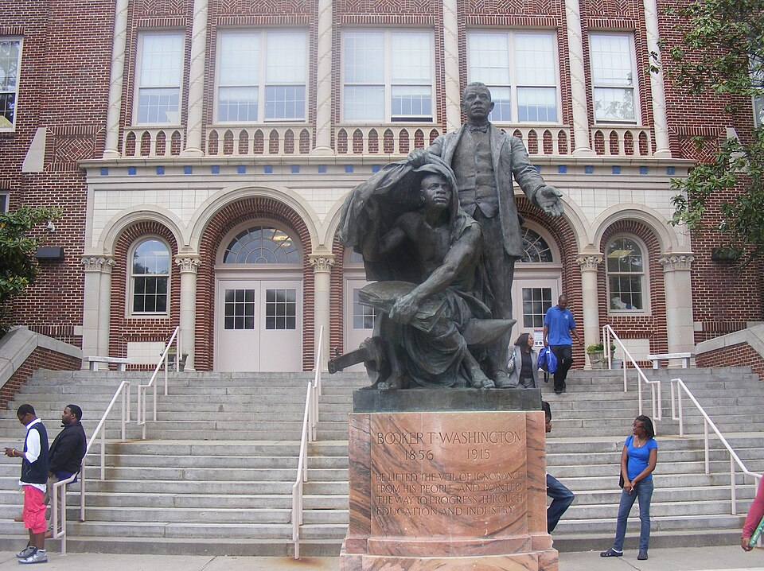
부커 T. 워싱턴 고등학교 · 애틀랜타. 마틴이 다닌 흑인 전용 고등학교. 그는 월반을 거듭해 15세에 모어하우스 대학에 입학했다. [Wikimedia Commons · Public Domain]
어린 마틴은 비범하게 영민했다. 그는 두 차례나 학년을 건너뛰어 고등학교를 2년 일찍 마쳤고, 열다섯에 대학생이 되었다. 열네 살 때는 조지아주 웅변대회에 나가 "흑인과 헌법"을 주제로 상을 받았다. 그런데 그날 집으로 돌아오는 버스에서, 백인 승객에게 자리를 내주라는 운전사의 명령에 따라 그와 선생님은 90마일을 내내 서서 와야 했다. 상을 받은 흑인 소년이 그 상의 주제인 헌법으로부터 가장 멀리 밀려나 있던 밤이었다. 그는 훗날 "내 평생 그토록 화가 났던 적이 없었다"고 회고했다. 웅변대회의 영광과 버스 안의 모욕, 그 극명한 대비가 한 소년의 가슴에 평생의 과제를 새겼다.
마틴의 어린 시절은 사랑이 넘쳤지만 그늘도 깊었다. 그가 가장 따르던 외할머니가 1941년 갑자기 심장마비로 세상을 떠났을 때, 열두 살의 마틴은 그날 부모 몰래 야구 경기를 보러 나가 있었다. 죄책감에 휩싸인 그가 집 2층 창문에서 뛰어내렸다는 일화가 전한다. 사료에 따라서는 이 일을 두고 어린 마틴이 평생 우울의 기질을 안고 살았음을 보여주는 첫 신호라 해석하기도 한다. 다행히 그는 크게 다치지 않았다. 위대한 인물의 단단함 뒤에는 종종 이렇게 일찍 찾아온 슬픔의 그늘이 있다.
곁가지 1 — "스위트 오번"이라는 섬
마틴이 자란 오번 애비뉴는 1956년 한 흑인 잡지가 "미국에서 가장 부유한 흑인 거리"라 부른 곳이었다. 노예 해방 이후 남부 흑인들은 백인 사회에서 배제되자, 자기들만의 은행과 보험회사와 신문과 교회를 세워 한 거리를 통째로 일궜다. 마틴의 외할아버지 A. D. 윌리엄스 목사가 시무한 에버니저 침례교회(Ebenezer Baptist Church)도 그 거리에 있었다. 마틴은 이 교회에서 태어나 이 교회에서 설교를 시작했고, 죽은 뒤에도 이 교회에서 장례를 치렀다. 한 거리가 한 인물의 요람이자 무덤이었던 셈이다. 오늘날 이 일대는 '마틴 루서 킹 주니어 국립역사공원'으로 보존되어 있다.
[Source] National Park Service, "MLK Jr. National Historical Park" · Taylor Branch, Parting the Waters (1988)
곁가지 2 — 짐 크로(Jim Crow)라는 이름의 법
마틴이 태어난 남부는 "짐 크로 법(Jim Crow laws)"이라 불린 인종 분리 법체계가 지배하고 있었다. 1896년 미국 연방대법원이 '플레시 대 퍼거슨' 판결에서 "분리되어 있으나 평등하다(separate but equal)"는 원칙을 합헌으로 인정한 뒤, 남부의 버스·식당·학교·식수대·화장실이 모두 백인용과 흑인용으로 갈렸다. '짐 크로'란 19세기 백인 배우가 흑인을 우스꽝스럽게 흉내 내던 코미디 캐릭터의 이름이었다. 한 인종 전체를 조롱하는 무대 이름이 곧 한 시대의 법 이름이 된 것이다. 마틴의 평생은 바로 이 '분리되어 있으나 평등하다'는 거짓말과의 싸움이었다.
[Source] Plessy v. Ferguson (1896) · C. Vann Woodward, The Strange Career of Jim Crow (1955)
미국
마틴이 태어나고 아홉 달 뒤인 1929년 10월, 뉴욕 월스트리트의 주가가 폭락하며 대공황이 시작됐다. 남부 흑인들은 "마지막에 고용되고 가장 먼저 해고되는" 처지여서 그 충격을 가장 깊이 견뎌야 했다.
유럽
같은 해 독일에서는 나치당이 세를 불리고 있었다. 4년 뒤 히틀러가 집권한다. 마틴의 이름의 뿌리인 마르틴 루터의 나라가, 또 다른 인종 박해의 무대가 되어 가던 시기였다.
인도
같은 무렵 인도에서는 간디의 비폭력 독립운동이 절정으로 치닫고 있었다. 1930년 그 유명한 '소금 행진'이 벌어진다. 한 인도 노인의 손에 들린 비폭력이라는 도구가, 30년 뒤 한 미국 청년의 손에 닿게 되리라는 것을 그때는 아무도 몰랐다.
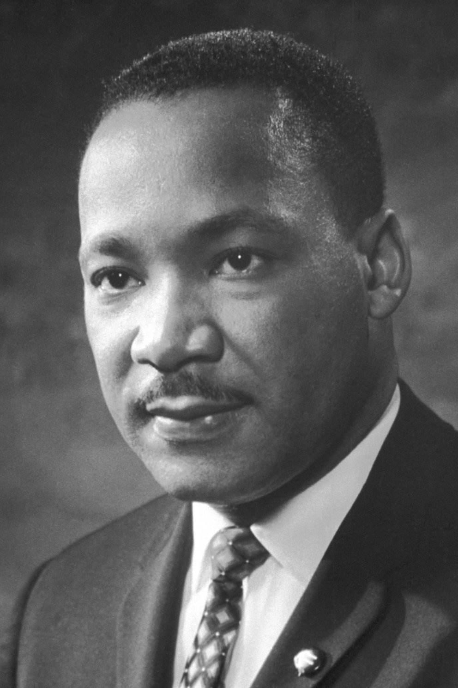
마틴 루서 킹 주니어 · 노벨 평화상 수상 무렵의 공식 초상. [Wikimedia Commons · Public Domain]
마틴 루서 킹 — 한눈에
본명Michael King Jr. (다섯 살에 Martin Luther King Jr.로 개명)
출생1929.1.15 · 조지아 애틀랜타 오번 애비뉴
사망1968.4.4 · 테네시 멤피스 (향년 39세)
학력모어하우스 학사 · 크로저 신학사 · 보스턴대 신학박사
가족아내 코레타 스콧 킹, 자녀 4명
최대 업적1964 시민권법 · 1965 투표권법의 정신적 동력
II
1944–1955년 · 애틀랜타 · 펜실베이니아 · 보스턴
모어하우스 보스턴 / 코레타 스콧과 결혼
강의 듣기
"보스턴 신학교에서 라인홀트 니버를 처음 읽었을 때, 내 평생의 도덕적 뼈대가 거기서 짜였다."
1944년 가을, 열다섯 살의 마틴이 애틀랜타의 흑인 명문 모어하우스 대학(Morehouse College)에 입학했다. 전쟁으로 대학생이 부족하던 시기라 우수한 고교생을 일찍 받아들이는 특별 제도 덕분이었다. 그는 처음에 의사나 변호사가 되어 흑인 사회에 봉사하려 했다. 아버지의 직업인 목사는, 그가 보기에 너무 감정적이고 너무 비합리적인 일이었다. 설교단에서 고함치며 신도를 울리는 남부 흑인 교회의 방식이 어린 그에게는 부끄럽게까지 느껴졌다.
그 마음을 바꾼 사람이 모어하우스의 총장 벤저민 메이스(Benjamin Mays)였다. 메이스는 지성과 신앙이 결코 적이 아니며, 오히려 교회야말로 인종 정의를 위한 가장 강력한 무기가 될 수 있다고 가르쳤다. 마틴은 메이스에게서 "생각하는 목사"의 모범을 보았다. 1948년, 열아홉 살의 마틴은 사회학 학사 학위를 받고 졸업하면서 마침내 목사 안수를 받았다. 그가 평생 따른 길은 이렇게 한 스승의 본보기에서 시작됐다.
모어하우스를 졸업할 무렵, 마틴은 아버지가 인도하던 남부 흑인 교회의 감정적 예배 방식에 여전히 거리를 두고 있었다. 그러나 그는 동시에, 지성으로 무장하되 가난하고 짓밟힌 이들의 마음을 움직일 수 있는 새로운 목회의 길을 꿈꾸기 시작했다. 신앙과 이성, 감정과 논리를 한데 묶는 것, 그것이 평생 그의 설교가 추구한 균형이었다. 그가 훗날 25만 명을 한 호흡으로 묶을 수 있었던 힘은, 바로 이 시기에 품은 '머리와 가슴을 모두 움직이는 설교'라는 이상에서 자랐다.
이어 1948년부터 1951년까지 마틴은 펜실베이니아의 크로저 신학교(Crozer Theological Seminary)에서 신학을 공부했다. 백인 학생이 대부분인 이 학교에서 그는 수석으로 졸업하며 학생회장을 맡았다. 여기서 그는 헨리 데이비드 소로의 '시민 불복종', 월터 라우셴부시의 '사회복음', 그리고 무엇보다 마하트마 간디의 비폭력 사상을 처음 깊이 만났다. 어떻게 사랑이 정치적 힘이 될 수 있는가, 그 질문이 이 시기 그를 사로잡았다. 흑인 학생이 백인 다수 학교의 학생회장이 된다는 것은 그 시대에 결코 작은 일이 아니었다. 그가 훗날 인종과 진영을 넘어 폭넓은 연대를 만들어 낼 수 있었던 바탕에는, 백인들 사이에서 그들의 신뢰를 얻어 본 이 시절의 경험이 있었다.
1951년부터 1955년까지는 매사추세츠의 보스턴 대학교(Boston University) 신학대학원에서 조직신학 박사 과정을 밟았다. 박사 논문의 제목은 "폴 틸리히와 헨리 넬슨 위먼의 신(神) 개념 비교"였다. 그는 1955년, 스물여섯의 나이에 신학박사(Ph.D.) 학위를 받았다. (다만 후대 연구에서 이 논문의 일부 문장이 출처 표기 없이 다른 학자의 글과 겹친다는 표절 논란이 제기되었다. 보스턴대 조사위원회는 1991년, 문제가 있으나 학위를 취소할 정도는 아니라고 결론지었다. 위대한 인물의 생애에도 이런 그늘은 정직하게 기록되어야 한다.)
크로저 시절의 한 일화는 그의 성격을 잘 보여 준다. 백인이 다수인 학교에서 한 백인 학생이 누군가의 장난을 마틴의 소행으로 오해하고 권총을 들이대며 위협한 일이 있었다. 마틴은 침착하게 자신은 결백하다고 말했고, 끝내 폭력으로 맞서지 않았다. 그 차분함에 오히려 가해 학생이 부끄러워하며 사과했다. 비폭력이 단지 전략이 아니라 그의 기질 깊은 곳에 있었음을, 학창 시절의 이 작은 사건이 미리 보여 준다.
보스턴 시절 그의 사상에 가장 깊은 자국을 남긴 사람은 신학자 라인홀트 니버(Reinhold Niebuhr)였다. 니버의 1932년 저작 『도덕적 인간과 비도덕적 사회(Moral Man and Immoral Society)』의 핵심 통찰, 곧 "한 개인은 도덕적일 수 있어도 집단과 사회는 부도덕할 수 있다"는 명제가 마틴의 평생 정치신학의 출발점이 되었다. 개인의 선의에만 호소해서는 인종주의라는 거대한 집단 구조를 바꿀 수 없으며, 조직된 비폭력의 압력이 필요하다는 깨달음이었다.
사랑 없는 힘은 무모하고 폭력적이며, 힘 없는 사랑은 감상적이고 무력하다. 정의란 사랑이 사회로 번역된 것이다.King, Where Do We Go from Here (1967) — 니버의 영향을 압축한 구절
그리고 보스턴은 그에게 평생의 동반자를 주었다. 1952년, 그는 보스턴 음악원(New England Conservatory)에서 성악을 공부하던 앨라배마 출신의 한 여성 코레타 스콧(Coretta Scott)을 친구의 소개로 만났다. 첫 데이트에서 마틴은 "당신은 내가 아내에게 바라는 네 가지를 모두 갖췄다"고 말했다 한다. 코레타는 단순한 목사 사모가 아니라 정치적 신념이 뚜렷한 평화운동가였다. 1953년 6월 18일, 두 사람은 코레타의 고향 앨라배마에서 결혼했다. 신부의 요청으로 결혼 서약에서 "남편에게 순종한다"는 구절을 뺐다는 일화가 전한다.
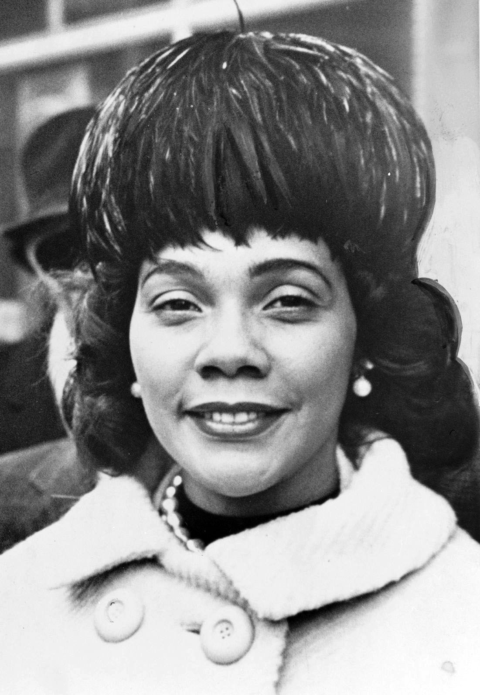
아내 코레타 스콧 킹 · 1964년. 단순한 조력자가 아니라 그 자체로 평화·인권운동가였으며, 마틴 사후에도 운동을 이어갔다. [Wikimedia Commons · Public Domain]
곁가지 1 — 사라진 "순종" 서약
1953년 결혼식에서 코레타는 당시로서는 파격적으로 결혼 서약에서 아내가 남편에게 "순종(obey)"한다는 전통적 문구를 삭제해 달라고 요구했다. 마틴은 처음엔 보수적인 흑인 침례교 가풍 때문에 망설였으나 결국 동의했다. 코레타는 훗날 회고록에서 "나는 누군가의 그림자가 되려고 결혼한 것이 아니었다"고 적었다. 실제로 그녀는 마틴이 베트남전 반대로 나아가도록 밀어붙인 사람이기도 했다. 한 위대한 인물의 곁에는, 종종 더 일찍 더 멀리 본 또 한 사람이 있다.
[Source] Coretta Scott King, My Life with Martin Luther King Jr. (1969)
곁가지 2 — 박사 논문 표절 논란
1980년대 후반, 스탠퍼드대의 '킹 페이퍼스 프로젝트' 연구진이 마틴의 1955년 보스턴대 박사 논문을 정밀 검토하던 중, 상당 부분이 선행 연구의 문장을 출처 표기 없이 가져왔다는 사실을 발견했다. 1991년 보스턴대 조사위원회는 표절이 있었음을 인정하면서도, 학위를 박탈하지는 않고 도서관 사본에 그 사실을 명기하는 메모를 붙이는 것으로 마무리했다. 학자들은 이를 두고 당시 흑인 설교 전통의 '구술적 차용' 문화와 학문적 기준의 충돌로 설명하기도 한다. 영웅의 결함을 지우지 않는 것이 진짜 역사다.
[Source] Boston University Investigatory Committee Report (1991) · The Journal of American History (1991)
미국
마틴이 박사 학위를 받던 1954년 5월, 연방대법원이 '브라운 대 교육위원회' 판결에서 공립학교의 인종 분리를 위헌이라 선언했다. 58년간 이어진 "분리되어 있으나 평등하다"는 원칙이 마침내 법적으로 무너지기 시작한 순간이었다.
한국
같은 시기 한반도는 1953년 한국전쟁 휴전 직후의 폐허였다. 미국 흑인 병사들이 인종이 통합된 부대에서 처음으로 백인과 나란히 싸운 전쟁이기도 했다. 1948년 트루먼의 군대 인종통합 명령이 그 배경이었다.
인도
마틴이 흠모한 간디는 이미 1948년 암살로 세상을 떠난 뒤였다. 그러나 1947년 독립한 인도가 보여준 '비폭력으로 제국을 이긴' 선례는, 대서양 건너 한 젊은 신학생에게 가장 생생한 교과서였다.
III
1955년 12월 1일 · 앨라배마 몽고메리
몽고메리 버스 보이콧, 로사 파크스
강의 듣기
"한 흑인 여인이 버스 자리를 양보하지 않은 그 한 번의 행위가, 한 시대를 깨웠다."
1954년 9월, 박사 과정을 거의 마친 스물다섯의 마틴은 앨라배마주 주도(州都) 몽고메리의 덱스터 애비뉴 침례교회(Dexter Avenue Baptist Church) 담임목사로 부임했다. 보스턴에서 학자의 길을 권하는 제안도 있었지만, 그는 자기 뿌리인 남부로, 그것도 인종 분리가 가장 단단한 앨라배마의 한복판으로 돌아가기를 택했다. 그가 새 교회에서 안정을 찾아갈 무렵, 한 사건이 그의 인생을 송두리째 바꿔놓는다.
덱스터 애비뉴 교회는 몽고메리에서 가장 교육 수준이 높은 흑인 교인들이 다니는, 점잖고 보수적인 교회였다. 부임한 젊은 마틴은 신도들에게 단순히 영혼의 위로만 주는 목사가 아니라, 사회 참여를 독려하는 목사가 되겠다고 선언했다. 그는 모든 교인에게 유권자 등록과 NAACP 가입을 권했다. 학자로 남을 수도 있었던 그가 굳이 인종주의가 가장 단단한 앨라배마로 돌아온 것은, 신앙이 삶과 사회를 바꾸지 못한다면 죽은 신앙이라는 확신 때문이었다.
1955년 12월 1일 저녁, 몽고메리 시내버스에서 마흔두 살의 흑인 재봉사 로사 파크스(Rosa Parks)가 백인 승객에게 자리를 양보하라는 운전사의 명령을 거부했다. 당시 몽고메리 버스의 규칙은 가혹했다. 흑인은 앞문으로 요금을 낸 뒤 다시 내려서 뒷문으로 타야 했고, 백인 좌석이 차면 중간 구역의 흑인은 일어나야 했다. 파크스는 그날 자리에서 체포되어 인종 분리법 위반으로 벌금형을 받았다.
흔히 "발이 아파서 일어나기 싫었던 한 여인의 우발적 행동"으로 알려졌지만, 이는 사실과 다르다. 로사 파크스는 이미 12년간 전미유색인지위향상협회(NAACP) 몽고메리 지부의 간사로 활동한, 단련된 운동가였다. 그녀 자신이 훗날 분명히 밝혔다.
사람들은 늘 내가 몸이 피곤해서 자리를 양보하지 않았다고 말한다. 그러나 그것은 사실이 아니다. 내가 피곤했던 것은 굴복하는 데 지쳤기 때문이다(tired of giving in).Rosa Parks, My Story (1992)
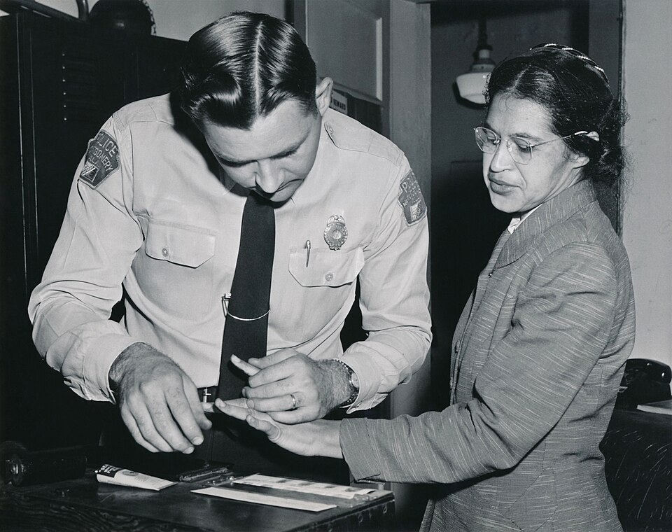
로사 파크스의 지문 채취 · 1956년 2월, 보이콧 주동자 집단 기소 당시. 그녀의 거부는 즉흥이 아니라 오래 준비된 의식적 저항이었다. [Wikimedia Commons · Public Domain]
파크스의 체포 소식이 알려지자 몽고메리 흑인 사회가 들끓었다. 흑인 여성 정치위원회의 조 앤 로빈슨이 하룻밤 사이에 5만 장의 전단을 등사해 뿌렸다. 12월 5일, 흑인 지도자들이 모여 버스 승차 거부 운동을 조직하기로 결의하고, 이를 이끌 단체 '몽고메리 진보연합(MIA)'을 만들었다. 누구를 의장으로 세울 것인가. 회의는 만장일치로 부임한 지 1년밖에 안 된 스물여섯 살의 새 목사 마틴 루서 킹을 선출했다. 한 동료의 회고에 따르면, 그가 너무 새로 와서 "아직 적도, 빚도 없는 사람"이었기 때문이었다. 역사의 무대는 종종 이렇게 우연처럼 한 사람을 호명한다.
그날 밤 마틴은 첫 대중 연설을 준비할 시간이 단 20분밖에 없었다. 홀트 스트리트 침례교회를 가득 메운 군중 앞에서 그는 떨리는 목소리로 외쳤다. "우리에게는 항의 말고는 다른 길이 없습니다. 그러나 우리의 항의는 사랑과 존엄으로 무장해야 합니다." 비폭력과 사랑을 무기로 삼겠다는 그 선언이, 미국 시민권 운동의 실질적 출발 신호였다.
보이콧을 이끌면서 마틴은 비폭력 철학을 현실의 무기로 벼려 갔다. 처음에 그는 자기 방어를 위해 집에 총을 두고 무장 경호원을 들였다. 그러나 흑인 평화운동가 베이어드 러스틴과 글렌 스마일리가 찾아와, 사랑과 비폭력의 운동이 총으로 지켜져서는 안 된다고 설득했다. 마틴은 결국 집 안의 총을 모두 치웠다. 몽고메리는 그가 간디의 사상을 책에서 거리로, 이론에서 실천으로 옮긴 첫 실험장이었다. 그는 훗날 "비폭력이 내 삶의 방식이 된 것은 바로 몽고메리에서였다"고 회고했다.
보이콧은 무려 381일 동안 이어졌다. 몽고메리 흑인 약 4만 명이 매일 걷거나, 흑인 택시기사들이 헐값에 태우거나, 정교한 카풀 조직으로 출퇴근했다. 버스 회사는 수입의 75%를 잃었다. 마틴의 집에는 폭탄이 던져졌고(가족은 무사했다), 그는 운전 중 사소한 트집으로 체포되기도 했다. 그러나 흑인 사회는 흔들리지 않았다. 마침내 1956년 11월 13일, 연방대법원이 '브라우더 대 게일' 판결에서 버스의 인종 분리가 위헌이라고 확정했다. 12월 21일, 마틴은 백인과 나란히 앉아 몽고메리 버스의 맨 앞자리에 올랐다. 비폭력이 거둔 첫 승리였다.
곁가지 1 — 클로뎃 콜빈, 잊힌 첫 거부자
사실 로사 파크스보다 아홉 달 앞선 1955년 3월, 열다섯 살 흑인 소녀 클로뎃 콜빈(Claudette Colvin)이 같은 몽고메리 버스에서 자리 양보를 거부하고 체포된 일이 있었다. 그러나 NAACP 지도부는 그녀를 운동의 상징으로 내세우지 않았다. 미혼의 십대였고 임신 중이었기에, 인종주의 언론의 공격에 취약하다고 판단한 것이다. 대신 흠잡을 데 없는 중년 여성 파크스가 선택됐다. 콜빈은 훗날 버스 분리를 위헌으로 만든 '브라우더 대 게일' 소송의 핵심 원고 네 명 중 하나였지만, 역사책에서는 오래 지워져 있었다. 운동에는 상징이 필요하고, 상징의 선택에는 때로 냉정한 계산이 따른다.
1956년 1월 30일 밤, 마틴의 집 현관에 폭탄이 터졌다. 다행히 코레타와 갓난 딸은 안쪽 방에 있어 무사했다. 소식을 듣고 분노한 흑인 군중 수백 명이 무기를 들고 집 앞에 모여들었다. 백인 경찰과 일촉즉발이었다. 부서진 현관 위에 선 마틴이 군중을 향해 외쳤다. "총을 치우십시오. 폭력으로 폭력을 갚을 수는 없습니다. 우리는 우리를 미워하는 자를 사랑해야 합니다." 군중은 천천히 흩어졌다. 그날 밤, 비폭력은 추상적 이론이 아니라 실제로 유혈을 막은 살아 있는 힘이었음을 증명했다.
[Source] King, Stride Toward Freedom (1958) · Taylor Branch, Parting the Waters
미국
보이콧이 한창이던 1956년, 엘비스 프레슬리가 첫 전국 히트곡을 내며 흑인 음악(리듬앤블루스)을 백인 주류로 끌어왔다. 음악에서는 인종의 벽이 흔들리는데, 버스에서는 여전히 자리가 갈리던 모순의 시대였다.
아프리카
1957년 가나가 사하라 이남 아프리카 최초로 독립했다. 마틴 부부는 가나 독립 기념식에 초청받아 참석했다. 식민지에서 벗어나는 아프리카와, 분리에서 벗어나려는 미국 흑인이 같은 시기 서로를 비추는 거울이 되었다.
소련
같은 1956년 헝가리 봉기가 소련 탱크에 짓밟혔다. 냉전의 미국은 "자유세계의 지도국"을 자처하면서도 자국 내 인종 분리라는 약점을 안고 있었고, 이는 시민권 운동에 외교적 압박이라는 뜻밖의 우군을 더해 주었다.
Tabula I · 몽고메리, 첫 불꽃 (1955–1956)
앨라배마의 한 버스에서 시작된 381일
앨라배마(저항의 무대) 조지아(고향 애틀랜타) 버스 보이콧 발화점
미국 남부 '딥 사우스'의 심장. 한 버스의 좌석 다툼이 대륙을 흔드는 운동의 첫 불꽃이 되었다.
IV
1957–1959년 · 애틀랜타 · 인도
SCLC 결성 / 인도 방문
강의 듣기
"그리스도가 우리에게 정신을 주었고, 간디가 우리에게 방법을 주었다."
몽고메리의 승리는 마틴을 하룻밤 사이 전국적 인물로 만들었다. 그러나 한 도시의 승리를 운동 전체로 키우려면 조직이 필요했다. 1957년 1월, 마틴은 남부의 흑인 목사들과 함께 애틀랜타에서 남부기독교지도자회의(SCLC, Southern Christian Leadership Conference)를 결성하고 초대 의장이 되었다. 교회야말로 남부 흑인 사회에서 가장 조직력 있고 가장 자율적인 공간이었기에, SCLC는 '교회를 기반으로 한 비폭력 직접행동'을 전략의 중심에 두었다. 이 단체는 이후 10여 년간 미국 시민권 운동의 사령탑이 된다.
몽고메리에서 한 도시가 거둔 승리는 역설적으로 마틴에게 더 큰 부담을 안겼다. 전국의 흑인이 그를 새 지도자로 우러러보았지만, 한 사람의 카리스마에만 기댄 운동은 오래갈 수 없었다. 그는 일시적 항의를 지속적 조직으로, 한 도시의 불꽃을 남부 전역의 들불로 바꿔야 한다는 것을 절감했다. 그 고민의 결실이 바로 SCLC였다. 교회를 단위로 삼은 이 조직은, 백인 권력이 함부로 손댈 수 없는 흑인 사회의 자율 공간을 운동의 토대로 삼았다.
같은 1957년 5월, 마틴은 워싱턴에서 열린 '자유를 위한 기도 순례'에서 약 2만 5천 명 앞에 처음 섰다. 그가 외친 후렴은 "우리에게 투표권을 달라(Give us the ballot)"였다. 투표권이야말로 흑인이 스스로를 지킬 정치적 무기라는 통찰이 이미 이때 분명했다. 1958년에는 첫 저서 『자유를 향한 발걸음(Stride Toward Freedom)』을 펴냈다. 책 사인회 도중 한 정신질환을 앓던 흑인 여성에게 편지칼로 가슴을 찔리는 사건도 겪었다. 칼끝이 대동맥을 아슬아슬하게 비껴가, 의사는 "재채기만 했어도 죽었을 것"이라 했다.
1959년 2월, 마틴과 코레타는 한 달간 인도를 순례했다. 마하트마 간디의 비폭력(아힘사·사티아그라하)의 본고장을 직접 밟기 위해서였다. 간디는 이미 11년 전 암살로 세상을 떠난 뒤였지만, 마틴은 인도 곳곳에서 간디의 동지들과 가족, 그리고 아쉬람을 찾아다녔다. 인도 총리 네루와도 만나 오래 대화했다. 그는 거기서 비폭력이 단순한 정치 전술이 아니라 삶의 방식이자 영적 규율임을 더 깊이 깨달았다.
다른 나라에는 내가 관광객으로 갈 수 있겠지만, 인도에는 순례자로 간다. 비폭력 저항을 통해 사회 변혁을 이뤄낸 그 방법이 가능하다는 것을, 간디는 인류 역사에 처음으로 증명했다.King, 인도 방문기 (1959) · The Papers of MLK, Vol. 5
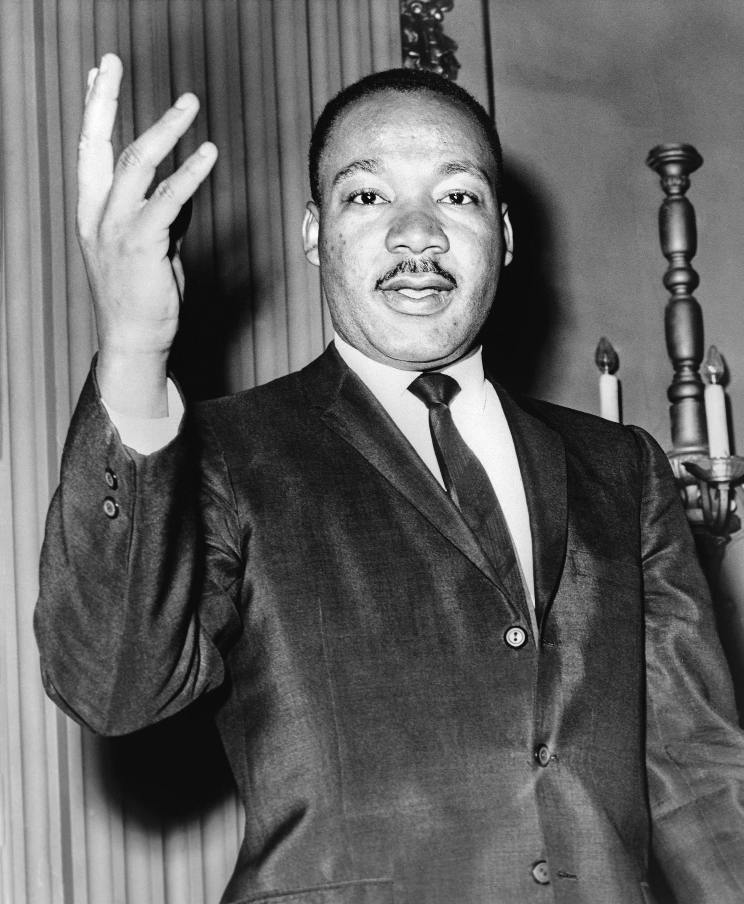
1950년대 후반의 마틴 루서 킹 · 뉴욕 월드텔레그램 컬렉션. 인도 순례를 전후해 그의 비폭력 철학은 한층 깊어졌다. [Library of Congress · NYWTS Collection · Public Domain]
인도 순례에서 마틴이 받은 충격 중 하나는 인도의 가난이었다. 그는 길거리에서 잠자는 수백만의 빈민을 보며, 인종 문제와 빈곤 문제가 결국 하나로 얽혀 있음을 어렴풋이 느꼈다. 또한 그는 간디가 카스트 제도의 최하층 '불가촉천민'을 '하리잔(신의 자녀)'이라 부르며 끌어안은 것에 깊이 감명받았다. 미국 흑인의 처지가 인도 불가촉천민의 그것과 다르지 않다고 본 마틴은, 자신을 "미국의 불가촉천민을 대변하는 사람"이라 여기기도 했다. 한 대륙의 가장 낮은 자들의 이야기가, 다른 대륙의 가장 낮은 자들의 거울이 된 것이다.
인도에서 돌아온 마틴은 자기 식단을 며칠씩 단식하며 간디를 본받으려 했고, SCLC의 훈련 프로그램에 '비폭력의 6원칙'을 체계화해 넣었다. 그 핵심은 이러했다. 비폭력은 비겁자의 방법이 아니라 가장 용기 있는 자의 방법이다. 비폭력의 목표는 적을 굴복시키는 것이 아니라 적의 양심을 깨워 우정과 화해(beloved community)에 이르는 것이다. 한 인도 노인의 손에 들렸던 도구가, 30년의 시간과 한 대륙을 건너 한 미국 청년의 손에 옮겨졌다. 도구가 세대를 건너 살아남을 때, 비로소 그것은 인류의 도구가 된다.
비폭력은 마틴에게 단순한 '무저항'이 아니었다. 그는 이를 '비폭력 직접행동(nonviolent direct action)'이라 불렀다. 부정의에 침묵하거나 굴종하는 것이 아니라, 적극적으로 부정의에 맞서되 그 수단으로 증오와 폭력을 거부하는 것이었다. 그 목적은 상대를 굴복시키거나 모욕하는 것이 아니라, 상대의 양심에 호소해 마침내 화해와 '사랑의 공동체(beloved community)'를 이루는 데 있었다. 그래서 그는 단식하는 시위자에게도, 매 맞는 행진대에게도 "우리를 때리는 자를 미워하지 말라"고 가르쳤다. 가해자조차 결국 함께 살아갈 이웃이기 때문이었다. 이 역설적 사랑이야말로 그의 운동을 단순한 정치 투쟁과 구별 짓는 핵심이었다.
1960년, 마틴은 활동의 중심을 고향 애틀랜타로 옮기고 아버지가 시무하던 에버니저 침례교회의 공동 목사가 되었다. 같은 해 노스캐롤라이나 그린즈버러에서 흑인 대학생들이 백인 전용 식당 카운터에 앉는 '연좌농성(sit-in)'을 시작했다. 이 학생 운동은 곧 '학생비폭력조정위원회(SNCC)'로 결집했다. 마틴의 비폭력은 이제 그를 넘어 한 세대 전체의 무기가 되어 가고 있었다.
곁가지 1 — 케네디에게 건 한 통의 전화
1960년 10월, 애틀랜타의 한 연좌농성에서 체포된 마틴이 외딴 주립 교도소로 이감되며 생명의 위협을 받았다. 마침 대선 막판이었다. 민주당 후보 존 F. 케네디가 코레타에게 위로 전화를 걸었고, 동생 로버트 케네디는 판사에게 직접 연락해 마틴의 석방을 도왔다. 이 소식이 흑인 사회에 퍼지자, 전통적으로 공화당(링컨의 당)을 지지하던 흑인 표심이 케네디에게로 쏠렸다. 역사가들은 이 한 통의 전화가 1960년 대선의 박빙 승부를 가른 변수 중 하나였다고 본다. 작은 인간적 배려가 거대한 정치를 움직인 사례다.
[Source] Taylor Branch, Parting the Waters · Theodore White, The Making of the President 1960
곁가지 2 — 간디가 먼저 읽은 소로, 소로가 본 노예제
비폭력 사상의 계보에는 흥미로운 순환이 있다. 19세기 미국의 헨리 데이비드 소로는 노예제와 멕시코 전쟁에 반대해 세금 납부를 거부하고 감옥에 갇힌 뒤 『시민 불복종』(1849)을 썼다. 20세기 초 남아프리카의 간디가 이 글을 읽고 깊이 감명받아 자신의 '사티아그라하'를 다듬었다. 그리고 20세기 중반, 미국의 마틴이 다시 간디를 통해 소로를 되읽었다. 미국에서 인도로, 인도에서 다시 미국으로. 한 사상이 지구를 한 바퀴 돌아 고향으로 돌아온 것이다. 마틴 자신이 "내 저항의 지적 뿌리는 소로에게 있다"고 고백했다.
마틴이 방문한 1959년의 인도는 독립 12년 차, 네루의 비동맹 외교가 한창이던 때였다. 같은 해 티베트 봉기로 달라이 라마가 인도로 망명해 왔다. 비폭력의 땅이 또 다른 비폭력 망명자를 품은 해였다.
아프리카
1950년대 말 아프리카 전역에서 식민지 독립의 물결이 거셌다. 1960년 한 해에만 17개 나라가 독립해 '아프리카의 해'로 불렸다. 마틴은 미국 흑인의 투쟁을 전 세계 반식민 해방운동의 한 갈래로 이해했다.
쿠바
1959년 1월 카스트로의 쿠바 혁명이 성공했다. 폭력 혁명으로 정권을 뒤엎은 쿠바와, 비폭력으로 법과 양심을 바꾸려는 마틴의 길은 같은 시대의 정반대 실험이었다.
V
1963년 4월 · 앨라배마 버밍엄
버밍엄, 옥중 편지
강의 듣기
"어디에서든 불의는 모든 곳의 정의를 위협한다(Injustice anywhere is a threat to justice everywhere)."
1963년 봄, SCLC는 미국에서 인종주의가 가장 폭력적이기로 악명 높던 앨라배마주 버밍엄을 표적으로 삼았다. 흑인들은 이 도시를 비꼬아 "버밍햄(Bombingham)", 곧 '폭탄의 도시'라 불렀다. KKK의 흑인 교회 폭파가 끊이지 않았기 때문이다. 시 공안국장 유진 '불' 코너는 노골적인 인종주의자였다. SCLC는 바로 이 도시의 상점가에 인종 분리 철폐를 요구하며 행진과 연좌농성을 벌이는 'C 작전'을 시작했다.
1963년 4월 12일 성(聖)금요일, 마틴은 법원의 시위 금지 명령을 어기고 행진하다 체포되어 독방에 갇혔다. 바로 그 무렵 지역 백인 성직자 여덟 명이 신문에 공개서한을 실어, 마틴의 운동을 "때 이르고 현명하지 못한(unwise and untimely)" 외부인의 선동이라 비판했다. 그들은 흑인들이 거리 시위 대신 법정에서 인내심을 갖고 기다리라고 충고했다.
독방의 마틴은 신문 여백과 변호사가 몰래 들여온 종잇조각에 그 비판에 대한 답장을 써 내려갔다. 그렇게 탄생한 것이 시민권 운동의 가장 위대한 문헌으로 꼽히는 「버밍엄 감옥에서 보내는 편지(Letter from Birmingham Jail)」다. 약 7천 단어에 이르는 이 편지는 즉흥적 항변이 아니라, 정의로운 법과 부정의한 법을 가르고 시민 불복종의 정당성을 신학·철학적으로 논증한 한 편의 명문이었다.
어디에서든 불의는 모든 곳의 정의를 위협한다. 우리는 상호 의존이라는 피할 수 없는 그물망, 운명의 한 옷자락에 함께 묶여 있다. 한 사람에게 직접 영향을 주는 것은 결국 모든 사람에게 간접적으로 영향을 준다.「버밍엄 감옥에서 보내는 편지」 1963.4.16
「버밍엄 감옥에서 보내는 편지」가 위대한 까닭은, 그것이 단순한 분노의 토로가 아니라 정교한 철학적 변론이었기 때문이다. 백인 성직자들은 "법을 어기면서 정의를 말하는 것은 모순"이라 비판했다. 마틴은 정면으로 응수했다. 정의로운 법과 부정의한 법이 있으며, "인간의 인격을 고양하는 법은 정의롭고, 인격을 타락시키는 법은 부정의하다"고. 그는 아우구스티누스의 "부정의한 법은 법이 아니다"와 토마스 아퀴나스의 자연법 사상을 끌어와, 인종 분리법은 신의 법과 자연법에 어긋나므로 어길 의무가 있다고 논증했다. 동시에 그는 부정의한 법을 어기되 그 처벌을 기꺼이 감수함으로써 그 행위가 법 자체에 대한 존중에서 나온 것임을 보여야 한다고 못 박았다. 시민 불복종의 가장 명료한 교과서가 한 독방에서 태어난 것이다.
편지에서 가장 날카로운 대목은 백인 온건파를 향한 것이었다. 마틴은 흑인 자유의 가장 큰 걸림돌이 KKK나 백인우월주의자가 아니라, "정의보다 질서를 더 중시하고, 정의가 깃든 적극적 평화보다 갈등이 없는 소극적 평화를 더 선호하는" 백인 온건파라고 적었다. "기다리라"는 말은 거의 언제나 "결코 안 된다"는 뜻이었다고도 했다. 그는 자녀에게 왜 백인 놀이공원에 갈 수 없는지 설명해야 하는 흑인 부모의 고통을 묘사하며, 더는 기다릴 수 없는 이유를 절절히 펼쳤다.
5월이 되자 SCLC는 위험하지만 결정적인 전술을 폈다. 어른들이 직장을 잃을까 망설이자, 마틴의 동지 제임스 베벨이 학생들을 거리로 불러낸 것이다. 이른바 '어린이 십자군(Children's Crusade)'이었다. 수천 명의 흑인 학생이 노래하며 행진했다. 불 코너는 이들에게 소방 호스의 고압 물대포와 경찰견을 풀었다. 어린아이들이 물대포에 나뒹굴고 경찰견에 물어뜯기는 장면이 텔레비전 전파를 타고 전 미국과 전 세계로 퍼졌다.
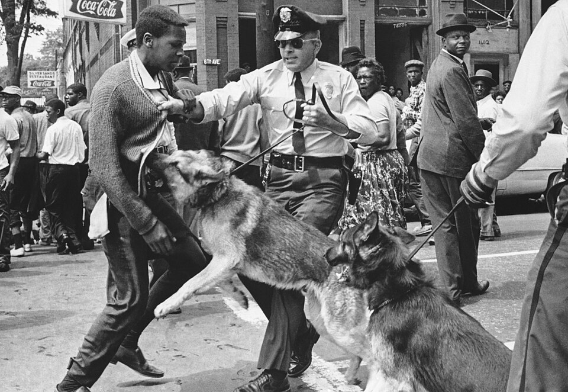
버밍엄, 경찰견의 공격 · 빌 허드슨(AP) 촬영, 1963년 5월 3일. 십대 청년 월터 개즈던을 향해 풀린 경찰견. 이 한 장이 다음 날 『뉴욕 타임스』 1면을 장식하며 미국의 양심을 뒤흔들었다. [Wikimedia Commons · Public Domain]
'어린이 십자군'을 둘러싸고는 운동 내부에서도 격렬한 논쟁이 있었다. 어린아이를 위험한 시위에 내보내는 것이 옳은가. 비판자들은 무책임하다고 했다. 그러나 마틴과 베벨은, 흑인 아이들은 이미 매일 인종 분리라는 폭력 속에 살고 있으며, 그 아이들이 스스로 존엄을 위해 행진할 권리가 있다고 보았다. 실제로 거리로 나선 아이들은 노래를 부르며 두려움을 이겨 냈다. 물대포에 옷이 찢기고 경찰견에 쫓기면서도 그들은 다음 날 또 나왔다. 한 시대를 바꾼 것은 거창한 영웅만이 아니라, 이름 없는 수천 명의 아이들이기도 했다.
이 충격적 이미지는 여론을 결정적으로 바꿔놓았다. 케네디 대통령은 "이 사진들을 보고 부끄러웠다"고 했고, 곧 강력한 시민권 법안 추진을 약속했다. 버밍엄의 상인들은 결국 상점가의 인종 분리 철폐에 합의했다. 거리의 작은 도시에서 거둔 이 승리가, 그해 여름 워싱턴의 거대한 행진과 이듬해의 시민권법으로 이어지는 직접적 도화선이 되었다.
곁가지 1 — 9월의 교회 폭파, 네 소녀의 죽음
버밍엄의 승리에는 잔혹한 후일담이 있다. 1963년 9월 15일 일요일 아침, 흑인 시민권 운동의 중심이던 16번가 침례교회 지하에서 KKK가 설치한 다이너마이트가 터졌다. 주일학교에 있던 흑인 소녀 네 명(애디 메이 콜린스, 신시아 웨슬리, 캐럴 로버트슨, 데니즈 맥네어, 모두 11~14세)이 그 자리에서 숨졌다. 워싱턴 대행진의 감격이 채 가시기 전이었다. 이 비극은 마틴을 비롯한 운동가들에게, 비폭력의 길이 얼마나 무거운 대가를 치르고 있는지를 뼈아프게 일깨웠다. 범인들은 무려 14년에서 38년이 지난 뒤에야 차례로 단죄되었다.
[Source] Diane McWhorter, Carry Me Home (2001, 퓰리처상) · FBI 'BAPBOMB' 수사 기록
곁가지 2 — 편지를 적은 종잇조각들
「버밍엄 감옥에서 보내는 편지」는 처음부터 책상 위에서 쓰인 글이 아니었다. 마틴은 독방에서 신문 가장자리 여백에, 그다음엔 다른 수감자가 건넨 화장지에, 마지막엔 변호사가 몰래 들여온 메모지에 토막토막 써 내려갔다. 이 조각들이 교회 비서들에게 전달되어 한 편의 글로 짜맞춰졌다. 어떤 학자는 이 '단편적 집필' 과정이 오히려 편지에 설교 같은 리듬과 격정을 불어넣었다고 본다. 가장 제약된 공간에서 가장 자유로운 글이 나온 역설이다.
[Source] Jonathan Rieder, Gospel of Freedom (2013) · The King Center 소장 자료
미국
버밍엄 시위가 한창이던 1963년 6월, 케네디 대통령이 TV 연설로 시민권을 "도덕의 문제"라 규정하고 법안을 예고했다. 그러나 같은 날 밤 미시시피에서 NAACP 활동가 메드거 에버스가 자택 앞에서 암살당했다.
바티칸
같은 1963년, 가톨릭교회는 제2차 바티칸 공의회가 진행 중이었다. 교회의 현대화와 인권에 대한 새로운 관심이 싹트던 시기로, 마틴의 비폭력 저항은 가톨릭 사회교리와도 공명했다.
남아프리카
같은 해 남아프리카에서는 아파르트헤이트에 맞선 넬슨 만델라가 리보니아 재판에 회부되어 이듬해 종신형을 선고받는다. 두 대륙의 흑인 지도자가 각각 감옥에서 자유를 변론하던 시대였다.
VI
1963년 8월 28일 · 워싱턴 D.C.
워싱턴 행진, "나에게 꿈이 있습니다"
강의 듣기
"나에게는 꿈이 있습니다(I have a dream)."
1963년 8월 28일, 워싱턴 D.C.의 링컨 기념관 앞 내셔널 몰에 약 25만 명의 인파가 모였다. 그중 약 4분의 1이 백인이었다. 일자리와 자유를 위한 워싱턴 행진(March on Washington for Jobs and Freedom), 그때까지 미국 수도에서 열린 가장 큰 정치 집회였다. 노동운동가 A. 필립 랜돌프가 오래 구상하고, 조직가 베이어드 러스틴이 단 8주 만에 치밀하게 준비한 이 행진은, 단순한 인종 평등을 넘어 일자리와 경제적 정의까지 요구한 것이었다.
링컨 기념관이라는 장소에는 깊은 상징이 담겨 있었다. 정확히 100년 전인 1863년, 에이브러햄 링컨이 노예해방선언에 서명했다. 그러나 한 세기가 지나도록 그 약속은 절반밖에 지켜지지 않았다. 마틴은 연설 서두에서 이 점을 날카롭게 짚었다. 미국이 모든 시민에게 발행한 "생명과 자유와 행복 추구권"이라는 약속어음이, 흑인에게만은 "잔고 부족"이라는 도장이 찍혀 되돌아왔다는 것이다. 그는 그러나 "정의의 은행이 파산했다고는 믿지 않는다"며, 그 어음을 현금으로 바꿔 받으러 왔다고 선언했다. 추상적 호소가 아니라 누구나 이해하는 경제의 언어로 정의를 요구한 이 비유는, 그날 연설의 또 다른 명장면이었다.
이 거대한 행진이 처음부터 환영받은 것은 아니었다. 케네디 행정부는 25만 명이 수도에 모이면 폭동이 일어날까 두려워 행진을 막으려 했다. FBI는 행진을 공산주의 음모로 의심했고, 백인 사회는 불안에 떨었다. 그러나 조직가들은 철저한 비폭력 훈련과 치밀한 동선 계획으로 단 한 건의 충돌도 없이 행사를 치러 냈다. 화장실, 식수, 응급처치, 귀가 버스까지 분 단위로 짜인 운영은 '비폭력은 무질서가 아니라 가장 높은 수준의 규율'이라는 마틴의 신념을 그대로 증명했다.
그날의 연설자는 여럿이었지만, 주최 측은 가장 인기 있는 마틴을 일부러 맨 마지막에 배치했다. 한낮의 더위에 지친 군중이 흩어지기 전, 마지막 절정을 만들기 위해서였다. 마틴은 미리 준비한 원고를 읽어 나갔다. 100년 전 링컨의 노예해방선언에도 불구하고 흑인이 여전히 "고독의 섬"에 갇혀 있다는, 다소 엄숙하고 절제된 연설이었다.
그런데 연설이 절반쯤 지났을 때, 마틴의 뒤편에 있던 가스펠 가수 마할리아 잭슨이 그를 향해 외쳤다. "마틴, 그 꿈 이야기를 들려줘요! 그 꿈을!(Tell them about the dream, Martin!)" 며칠 전 디트로이트 연설에서 그가 '꿈'을 이야기한 것을 그녀는 기억하고 있었다. 마틴은 잠시 멈칫하더니, 원고를 한쪽으로 밀어두고 즉흥적으로 그 유명한 후렴을 외치기 시작했다.
나에게는 꿈이 있습니다. 언젠가 이 나라가 떨쳐 일어나, "모든 인간은 평등하게 창조되었다"는 그 신조의 참뜻을 실천하며 살아가리라는 꿈입니다.
나에게는 꿈이 있습니다. 언젠가 조지아의 붉은 언덕에서, 옛 노예의 후손과 옛 노예주의 후손이 형제애의 식탁에 함께 둘러앉으리라는 꿈입니다.
나에게는 꿈이 있습니다. 나의 네 아이가 언젠가 피부색이 아니라 인격의 됨됨이로 평가받는 나라에서 살아가리라는 꿈입니다.마틴 루서 킹, 「I Have a Dream」 연설, 1963.8.28
「나에게는 꿈이 있습니다」가 그토록 깊이 울린 데에는 형식의 힘도 있었다. 마틴은 흑인 침례교 설교의 전통, 곧 한 구절을 반복하며 점점 고조시키는 '부름과 응답'의 리듬을 정치 연설에 가져왔다. "나에게는 꿈이 있습니다"를 여덟 번, "자유가 울려 퍼지게 하라(Let freedom ring)"를 거듭 외치며, 그는 청중을 한 호흡으로 묶어 절정으로 끌어올렸다. 그것은 원고에 적힌 논리가 아니라, 한 흑인 교회의 예배가 25만 명의 광장으로 확장된 순간이었다. 정치와 신앙, 이성과 영감이 한 몸이 된 이 연설은 그래서 단순한 웅변이 아니라 하나의 의식(儀式)이었다.
흥미롭게도 '꿈'은 그날 처음 등장한 표현이 아니었다. 마틴은 이미 같은 해 디트로이트와 여러 집회에서 비슷한 후렴을 시험한 바 있었다. 참모들은 워싱턴 연설에서는 '꿈'이 너무 진부하다며 빼라고 조언했다. 그래서 준비된 원고에는 그 대목이 없었다. 마할리아 잭슨의 외침이 아니었다면, 역사에 남은 그 후렴은 영영 세상에 나오지 않았을지도 모른다. 가장 위대한 순간이 가장 즉흥적인 순간에서 태어났다는 사실은, 철저한 준비 위에서만 진정한 즉흥이 가능하다는 역설을 보여 준다. 수백 번 갈고닦은 설교의 언어가 있었기에, 원고를 버린 그 순간에도 그의 입에서는 완성된 문장이 쏟아질 수 있었다.
약 17분간의 연설은 미국 정치 수사학의 정점으로 남았다. 현장의 25만 명이 그 자리에서 들었고, 텔레비전과 라디오를 통해 수천만 명이 들었다. 연설의 마지막은 흑인 영가의 한 구절을 빌려 절정에 이르렀다. "마침내 자유! 마침내 자유! 전능하신 하나님 감사합니다, 우리가 마침내 자유로워졌습니다!" 한 침례교 목사의 설교가 한 나라의 양심을 향한 외침이 된 순간이었다.
「나에게는 꿈이 있습니다」 연설 · 1963년 8월 28일, 링컨 기념관. 원고를 밀어두고 외친 즉흥의 후렴이 역사가 되었다. [Wikimedia Commons · Public Domain]
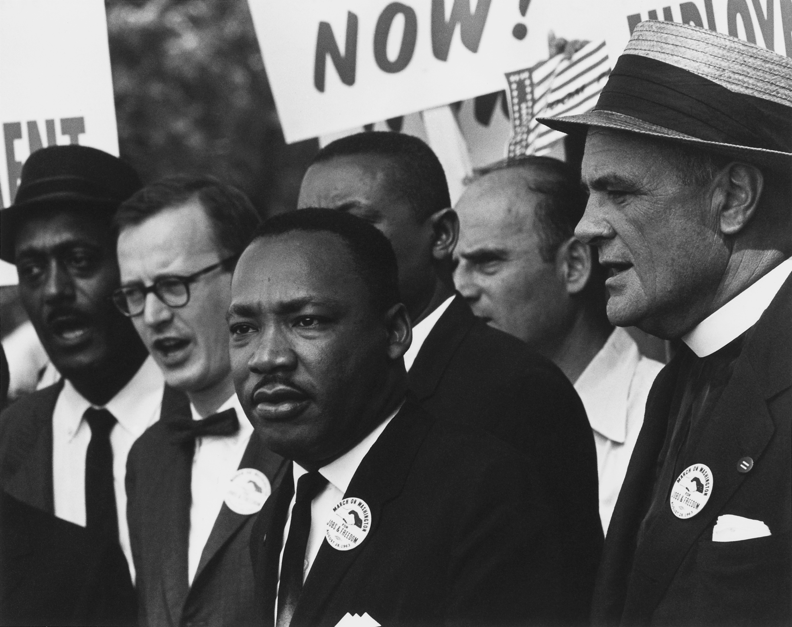
워싱턴 행진의 군중 · 내셔널 몰을 가득 메운 약 25만 명. 미 국립문서기록관리청(NARA) 복원본. [NARA · Public Domain]
행진의 성과는 컸다. 약 1년 뒤인 1964년 7월, 린든 존슨 대통령이 식당·호텔·고용에서의 인종 차별을 금지하는 「1964년 시민권법(Civil Rights Act)」에 서명했다. 마할리아 잭슨의 외침 한마디로 즉흥이 된 그 연설이, 결국 법전의 문장으로 굳어진 것이다. 다만 마틴은 이 영광의 순간에도 냉정했다. 그는 "꿈"이라는 단어가 너무 낭만적으로만 소비되는 것을 경계했고, 훗날 "내 꿈이 악몽으로 변하는 것을 너무 자주 보았다"고 말하기도 했다.
마틴 루서 킹과 랍비 요아힘 프린츠 · 1963년 워싱턴 행진. 나치 독일을 탈출한 유대인 랍비 프린츠는 마틴 직전에 연단에 올라 "침묵이야말로 가장 부끄러운 일"이라 외쳤다. [Wikimedia Commons · Public Domain]
곁가지 1 — 연설을 이끈 두 사람, 잭슨과 러스틴
"꿈"을 외치게 한 마할리아 잭슨 못지않게, 행진 자체를 만든 숨은 주역은 조직가 베이어드 러스틴(Bayard Rustin)이었다. 그는 마틴에게 간디식 비폭력을 실무적으로 가르친 멘토였다. 그러나 러스틴은 공개적 동성애자였고 한때 공산당 경력이 있어, 운동의 '약점'으로 공격받을까 우려한 일부 지도부가 그를 전면에 내세우길 꺼렸다. 그럼에도 마틴은 그를 행진의 총괄 조직가로 세웠다. 25만 명을 무사히 모으고 해산시킨 그날의 기적적 운영은 러스틴의 작품이었다. 무대 뒤의 사람이 무대 위의 역사를 떠받친 셈이다.
[Source] John D'Emilio, Lost Prophet: The Life and Times of Bayard Rustin (2003)
곁가지 2 — 저작권이 걸린 "꿈"
역설적이게도, 미국에서 가장 유명한 이 연설은 누구나 자유롭게 쓸 수 있는 것이 아니다. 마틴은 연설 직후 원고의 저작권을 등록했고, 1999년 한 방송사가 무단 사용하자 킹 재단(상속인)이 소송에서 이겼다. 그래서 「I Have a Dream」 연설의 전체 영상과 텍스트는 2038년까지 저작권 보호를 받는다. 인류의 공동 유산처럼 느껴지는 그 외침이, 법적으로는 한 가문의 재산인 것이다. 이를 두고 "공공의 기억과 사적 권리"가 충돌하는 대표 사례로 자주 거론된다.
[Source] Estate of Martin Luther King, Jr., Inc. v. CBS, Inc. (11th Cir. 1999)
미국
워싱턴 행진 3개월 뒤인 1963년 11월 22일, 케네디 대통령이 댈러스에서 암살됐다. 시민권법의 운명은 부통령에서 대통령이 된 텍사스 출신 린든 존슨의 손에 넘어갔고, 그는 케네디의 유산을 이어 법안을 강하게 밀어붙였다.
영국
같은 1963년, 영국에서는 비틀스가 첫 앨범으로 폭발적 인기를 끌며 '브리티시 인베이전'을 예고했다. 청년 문화가 기성 질서에 균열을 내기 시작하던 시대의 공기 속에서, 미국 흑인 청년들의 행진도 같은 세대의 외침이었다.
동아시아
같은 해 한국은 제3공화국이 출범했고, 베트남에서는 남베트남 정권의 위기가 깊어지며 미국의 개입이 확대되고 있었다. 4년 뒤 마틴이 정면으로 반대하게 될 그 전쟁의 씨앗이 이미 자라고 있었다.
워싱턴 행진 (1963.8.28)
참가 인원약 25만 명 (당시 미국 최대 정치 집회)
장소워싱턴 D.C. 링컨 기념관 앞 내셔널 몰
연설 길이약 17분 (후반부는 즉흥)
직접 결실1964년 시민권법 제정
핵심 구호일자리와 자유 (Jobs and Freedom)
Tabula II · 절정의 해, 1963
버밍엄에서 워싱턴까지, 양심을 흔든 한 해
버밍엄(시위·옥중 편지) 워싱턴 D.C.(대행진) 여론의 이동 경로 결정적 사건
남부의 거리에서 켜진 불꽃이 수도의 광장으로 번진 해. 텔레비전이 그 불씨를 전 미국으로 실어 날랐다.
VII
1964년 · 오슬로 · 워싱턴
노벨 평화상 / FBI의 도청
강의 듣기
"나는 이 상을, 인종 정의를 위해 싸우는 모든 이의 신탁관리인으로서 받습니다."
1964년 12월 10일, 노르웨이 오슬로에서 서른다섯의 마틴 루서 킹이 노벨 평화상을 받았다. 그때까지 노벨 평화상 역사상 가장 젊은 수상자였다. 미국의 인종 분리를 폭력 없이 무너뜨려 온 비폭력 투쟁에 대한 세계의 인정이었다. 그는 수상 연설에서 이 상을 개인의 것이 아니라 운동 전체의 것으로 돌렸다.
나는 우리 시대의 가장 큰 도덕적 질문에 폭력 없이 답하려 애써 온 한 운동의 신탁관리인으로서 이 상을 받습니다. 그 질문이란, 억압과 폭력 없이 압제와 폭력을 이겨낼 수 있는가 하는 것입니다.King, 노벨 평화상 수상 연설, 오슬로 1964.12.10
노벨상은 마틴의 위상을 미국을 넘어 세계로 끌어올렸다. 이제 그는 한 나라의 시민권 지도자가 아니라 인류 양심의 대변자로 여겨졌다. 그러나 이 세계적 명성은 동시에 더 큰 책임을 지웠다. 세계가 자신을 평화의 상징으로 바라보는 한, 그는 미국 내 인종 문제에만 머무를 수 없었다. 베트남 전쟁의 부정의에 침묵한다면, 자신이 받은 평화상이 무슨 의미가 있겠는가. 노벨상은 영광이자 동시에 그를 더 위험한 싸움으로 떠미는 무거운 의무이기도 했다.
그는 상금 5만 4천여 달러 전액을 시민권 운동 단체들에 기부했다. 자신을 위해서는 한 푼도 남기지 않았다. 세계가 그를 평화의 사도로 떠받든 바로 그 순간, 그러나 그의 조국 미국에서는 한 거대한 권력기관이 그를 "미국의 가장 위험한 인물"로 규정하고 집요하게 파괴하려 하고 있었다.
그 기관은 다름 아닌 연방수사국(FBI)이었다. 국장 J. 에드거 후버(J. Edgar Hoover)는 마틴을 공산주의의 도구로 의심하며 깊이 증오했다. 1963년 워싱턴 행진 직후, 법무장관 로버트 케네디의 승인 아래 FBI는 마틴의 전화와 호텔 객실을 도청하기 시작했다. 'COINTELPRO'라 불린 비밀 방첩 공작의 일환이었다. 도청에서 공산주의의 증거는 한 점도 나오지 않았다. 대신 FBI가 손에 넣은 것은 마틴의 사생활, 특히 혼외관계의 정황이었다.
1964년 11월, 노벨상 수상을 앞둔 마틴에게 익명의 소포가 도착했다. 안에는 도청으로 짜깁기한 녹음테이프와, 마틴을 "사기꾼"이라 부르며 사실상 자살을 종용하는 협박 편지가 들어 있었다. 편지는 "당신에게 남은 길은 단 하나뿐"이라 끝맺었다. 이 소포를 먼저 열어 본 사람은 아내 코레타였다. 훗날 상원의 처치 위원회(1975~76) 조사로, 이 편지가 FBI 방첩부서의 작품임이 만천하에 드러났다. 한 나라의 최고 수사기관이 자국의 도덕적 영웅을 죽음으로 내몰려 한, 미국 현대사의 가장 어두운 장면 중 하나였다.
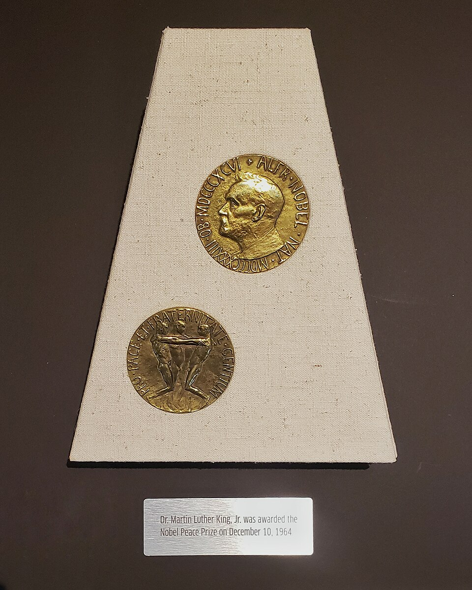
노벨 평화상 메달 · 1964년 12월 10일, 오슬로. 세계가 그를 평화의 사도로 기리던 바로 그때, 그의 조국 FBI는 그를 도청하고 협박하고 있었다. [Wikimedia Commons · Public Domain]
마틴 자신은 이 협박과 감시 앞에서 흔들리면서도 끝내 무너지지 않았다. 그는 자신의 약점을 누구보다 잘 알았다. 그러나 그는 "나는 완전한 사람이 아니다. 나도 죄인이다. 다만 나는 옳은 일을 하려 애쓰는 죄인일 뿐"이라며, 자신을 우상화하는 것을 경계했다. FBI가 그의 인격을 무너뜨려 운동 전체를 무너뜨리려 했지만, 마틴은 자신의 결함을 인정함으로써 오히려 그 협박의 칼날을 무디게 했다. 완벽한 성인(聖人)이 아니라 결함을 가진 인간이 끝까지 옳은 길을 가려 했다는 사실이, 그의 이야기를 더욱 인간적으로 만든다.
이 시기의 마틴은 영광과 박해를 동시에 짊어진 사람이었다. 그는 끊임없는 살해 협박과 FBI의 감시 속에서 깊은 불면과 우울에 시달렸다. 측근들은 그가 "나는 오래 살지 못할 것"이라는 말을 자주 했다고 증언한다. 평화의 상을 받은 자가 가장 평화롭지 못한 삶을 살아야 했던 역설. 그러나 그는 멈추지 않았다. 노벨상은 끝이 아니라, 더 깊고 더 위험한 싸움으로 들어가는 문턱이었다.
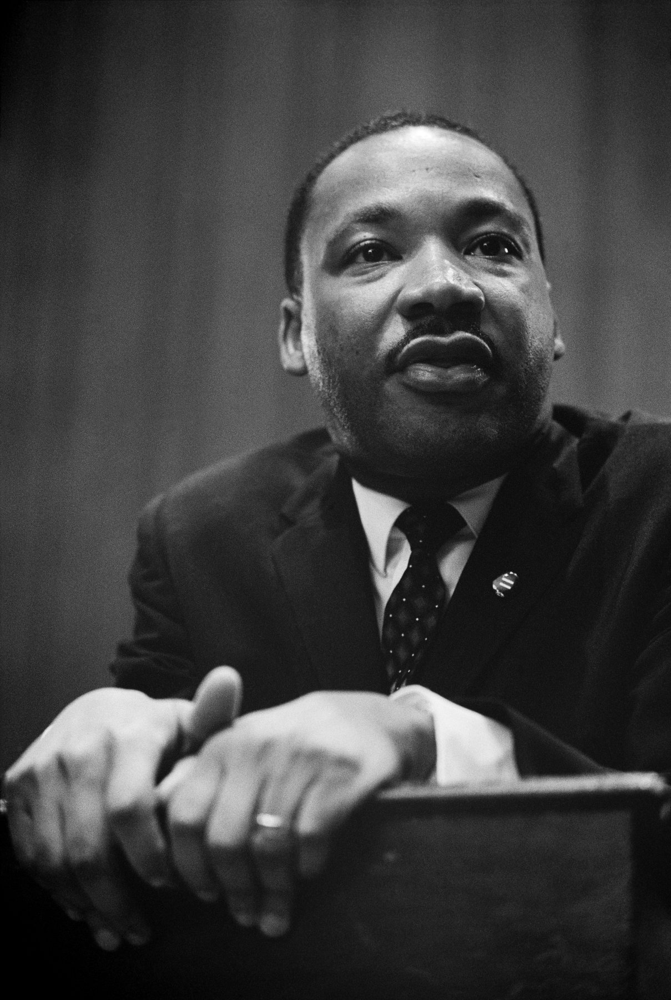
기자회견 중인 마틴 루서 킹 · 워싱턴 D.C. 미 의회도서관 소장. 그는 늘 카메라와 마이크에 둘러싸였지만, 그 뒤편에는 도청 마이크도 따라다녔다. [Library of Congress · Public Domain]
곁가지 1 — 코드명 두 글자, 그리고 50년의 봉인
FBI 내부 문서에서 마틴은 단순한 감시 대상이 아니라 최우선 표적이었다. 후버는 마틴을 "이 나라에서 가장 악명 높은 거짓말쟁이"라 공개적으로 부르기까지 했다. 도청으로 모은 마틴의 사생활 녹음 원본은 1977년 법원 명령에 따라 미 국립문서기록관리청 금고에 봉인되었고, 봉인 해제 시점은 2027년 1월로 정해졌다. 60년의 봉인이다. 역사가들은 이 테이프가 풀리면 한 영웅의 사생활을 둘러싼 또 한 차례의 논쟁이 불가피하리라 본다. 영웅을 어디까지 알 권리가 있는가, 그 물음이 아직 답을 기다리고 있다.
[Source] U.S. Senate Church Committee Report (1976) · David Garrow, The FBI and Martin Luther King, Jr. (1981)
곁가지 2 — 가장 어린 수상자라는 기록
1964년 마틴은 35세로 당시 최연소 노벨 평화상 수상자가 되었다. 이 기록은 2014년, 파키스탄의 17세 소녀 말랄라 유사프자이가 여성 교육권 운동으로 수상하면서 깨졌다. 흥미롭게도 말랄라 역시 비폭력 저항의 계보에 서 있는 인물이다. 한 세대의 가장 젊은 평화상 수상자가 든 비폭력의 횃불이, 반세기 뒤 또 다른 가장 젊은 수상자에게로 이어진 셈이다. 마틴이 인도에서 받아 든 간디의 도구가, 다시 남아시아의 한 소녀에게로 돌아간 긴 순환의 한 장면이기도 하다.
[Source] The Norwegian Nobel Committee 공식 기록 · Nobelprize.org
미국
마틴이 노벨상을 받은 1964년, 린든 존슨은 '위대한 사회(Great Society)'를 내걸고 빈곤과의 전쟁을 선포하며 대선에서 압승했다. 같은 해 베트남에서는 통킹만 사건을 빌미로 미국의 군사 개입이 본격화되었다.
소련
같은 1964년 10월 흐루쇼프가 실각하고 브레즈네프가 권력을 잡았다. 냉전이 새 국면에 접어들었고, FBI가 마틴을 공산주의와 엮으려 한 것도 이 냉전 히스테리의 산물이었다.
중국
1964년 10월 중국이 첫 핵실험에 성공했다. 마틴은 핵무기 경쟁을 인류가 직면한 또 하나의 거대한 부정의로 보았고, 훗날 군비 확장과 베트남전을 한 묶음으로 비판하게 된다.
VIII
1965년 3월 · 앨라배마 셀마 → 몽고메리
셀마 행진 / 투표권법
강의 듣기
"우리는 셀마에서 몽고메리까지 행진할 것입니다. 한 시민으로서 마땅한 권리를 위해서."
1964년 시민권법은 식당과 호텔의 인종 분리를 금지했지만, 한 가지 결정적인 권리는 여전히 남부 흑인의 손에 닿지 않았다. 바로 투표권이었다. 남부의 백인 선거 등록관들은 흑인이 등록하러 오면 터무니없는 문해력 시험을 들이밀었다. "헌법 전문을 외워 보라", "비누 한 그릇에 거품이 몇 개냐" 같은, 누구도 답할 수 없는 질문이었다. 앨라배마 셀마에서는 흑인이 인구의 절반을 넘었지만, 유권자 등록을 마친 흑인은 약 2퍼센트에 불과했다.
투표권은 마틴에게 단순한 한 표 이상의 의미였다. 그것은 흑인이 스스로의 운명을 결정할 정치적 힘이자, 자신을 짓밟는 보안관과 판사와 시장을 선거로 갈아치울 수 있는 가장 합법적이고 가장 근본적인 무기였다. "투표권 없이 흑인은 영원히 백인 선의의 자비에 기대 살아야 한다"고 그는 보았다. 그래서 식당과 호텔의 통합 다음 단계로, 운동은 반드시 투표함을 향해야 했다.
1965년 초, SCLC와 SNCC는 셀마를 투표권 투쟁의 무대로 삼았다. 2월, 인근 마을의 시위에서 흑인 청년 지미 리 잭슨이 주 경찰의 총에 맞아 숨졌다. 분노한 운동가들은 그의 시신을 주도(州都) 몽고메리의 주지사 앞까지 메고 가는 행진을 계획했다. 셀마에서 몽고메리까지 약 87킬로미터의 길이었다.
1965년 3월 7일 일요일, SNCC의 젊은 지도자 존 루이스(John Lewis)와 SCLC의 호시아 윌리엄스가 약 600명을 이끌고 셀마의 에드먼드 페터스 다리(Edmund Pettus Bridge)를 건너기 시작했다. 다리 끝에서 주 경찰과 보안관들이 가스 마스크를 쓴 채 기다리고 있었다. 행진대가 멈추자 경찰이 최루탄을 터뜨리고 곤봉과 채찍을 휘두르며 말을 몰아 덮쳤다. 존 루이스는 두개골이 골절됐고, 수십 명이 피를 흘리며 쓰러졌다. 이날이 "피의 일요일(Bloody Sunday)"이다.
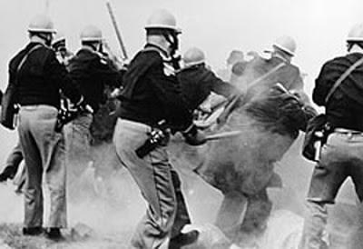
「피의 일요일」 · 1965년 3월 7일, 에드먼드 페터스 다리. 주 경찰이 비무장 행진대를 곤봉과 최루탄으로 공격했다. [Wikimedia Commons · Public Domain]
그날 밤 ABC 방송은 정규 영화 방영을 끊고 셀마의 참상을 약 4천8백만 가구에 내보냈다. 평화롭게 걷던 시민들이 무참히 짓밟히는 장면에 미국 전역이 충격에 빠졌다. 마틴은 당시 애틀랜타에 있어 첫 행진에 없었으나, 즉시 셀마로 달려가 전국의 성직자와 시민에게 동참을 호소했다. 수백 명의 백인 목사·랍비·수녀가 셀마로 모여들었다.
'피의 일요일'의 충격은 마틴에게 깊은 딜레마를 안겼다. 분노한 시민들은 즉각 재행진을 원했지만, 연방 법원은 일시적으로 행진을 금지했다. 마틴은 평생 법의 테두리 안에서 비폭력을 지켜 왔기에, 법원 명령을 어기는 것을 망설였다. 3월 9일 두 번째 시도에서 그는 다리 위까지 행진대를 이끌고 갔다가, 무릎 꿇고 기도한 뒤 돌아서는 길을 택했다. 일부 젊은 운동가들은 이 '회군'을 비겁한 타협이라 비난했다. 그러나 마틴은 운동의 도덕적 정당성과 연방정부의 보호를 모두 얻기 위한 신중한 선택이라 보았다. 이상과 현실 사이에서 줄타기하는 지도자의 고독이 가장 선명하게 드러난 순간이었다.
'회군의 화요일' 그날 밤, 셀마를 찾은 백인 유니테리언 목사 제임스 리브가 거리에서 백인 폭도에게 머리를 맞아 이틀 뒤 숨졌다. 그동안 무수한 흑인의 희생에도 미온적이던 백악관과 의회가, 한 백인 성직자의 죽음 앞에서 비로소 움직였다. 존슨 대통령은 3월 15일 상하원 합동회의에서 투표권법을 호소하며 시민권 운동의 구호 "우리는 승리하리라(We shall overcome)"를 대통령으로서 직접 인용했다. 마틴은 그 연설을 텔레비전으로 보며 눈물을 흘렸다고 전해진다. 한 사람의 죽음이 다른 사람의 죽음보다 더 무겁게 다뤄지는 그 불평등조차, 운동가들은 정의를 앞당기는 지렛대로 삼아야 했다.
그렇게 3월 9일의 '회군의 화요일' 뒤, 그리고 마침내 3월 21일, 연방 법원의 보호 명령과 연방군의 호위 아래 본격적인 행진이 시작됐다. 약 8천 명으로 출발한 행렬은 닷새간 밤낮으로 걸어 3월 25일 몽고메리에 도착했을 때 약 2만 5천 명으로 불어 있었다. 마틴은 주 의사당 앞 계단에서 역사에 남을 연설을 했다.
도덕적 우주의 궤도는 길다. 그러나 그것은 정의를 향해 휘어진다(The arc of the moral universe is long, but it bends toward justice).King, 「Our God Is Marching On!」 몽고메리 연설, 1965.3.25
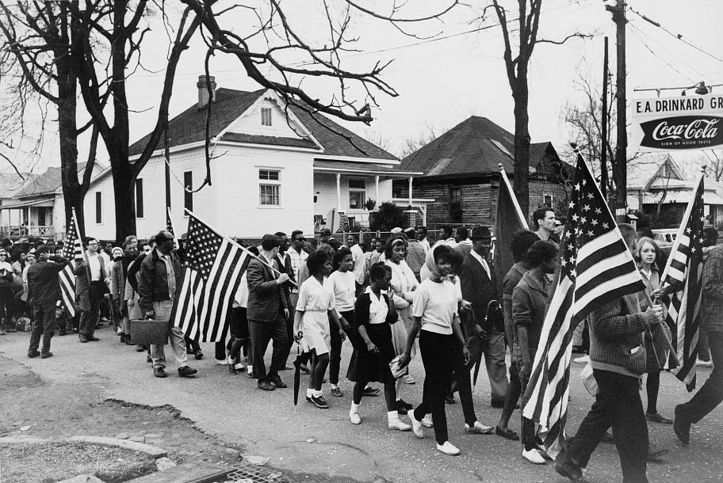
셀마에서 몽고메리로의 행진 · 1965년 3월. 연방군의 호위 아래 닷새간 87킬로미터를 걸었다. [Wikimedia Commons · Public Domain]
몽고메리에 도착한 행진대 앞에서 마틴이 던진 물음과 답은 오래 기억되었다. "얼마나 더 걸리겠습니까? 오래 걸리지 않을 것입니다. 진실이 짓밟혀도 다시 일어날 것이기 때문입니다." 그는 거짓이 잠시 이길 수는 있어도 영원히 이길 수는 없다는 신념을, 행진으로 지친 군중에게 다시 불어넣었다. 셀마의 87킬로미터는 단순한 거리가 아니라, 백 년간 미뤄진 약속을 향한 한 걸음 한 걸음의 채권 추심이었다.
셀마의 피와 행진은 마침내 법으로 보답받았다. 1965년 8월 6일, 린든 존슨 대통령이 「1965년 투표권법(Voting Rights Act)」에 서명했다. 문해력 시험을 금지하고 연방정부가 남부의 선거 등록을 직접 감독하도록 한 이 법으로, 남부 흑인의 유권자 등록률이 단 몇 년 만에 극적으로 치솟았다. 미시시피의 흑인 등록률은 7퍼센트에서 60퍼센트 이상으로 뛰었다. 비폭력이 거둔 가장 구체적이고 가장 측정 가능한 승리였다.
곁가지 1 — 다리에 새겨진 KKK 단원의 이름
'피의 일요일'의 무대인 에드먼드 페터스 다리에는 쓰라린 아이러니가 있다. 다리 이름의 주인공 에드먼드 페터스는 남북전쟁 당시 남부연합 장군이자, 전후 앨라배마 KKK의 '그랜드 드래건(최고위 간부)'을 지낸 인물이었다. 흑인 투표권을 위한 행진이, 흑인을 억압하던 KKK 두목의 이름이 새겨진 다리 위에서 피를 흘린 것이다. 이 때문에 오늘날까지 다리 이름을 존 루이스 등의 이름으로 바꾸자는 운동이 이어지고 있다. 역사의 무대는 때로 이렇게 잔혹한 상징을 품고 있다.
[Source] National Park Service, "Selma to Montgomery National Historic Trail"
곁가지 2 — 셀마에서 죽은 백인들
셀마 투쟁은 흑인만의 희생이 아니었다. 첫 행진 직후, 보스턴에서 달려온 백인 유니테리언 목사 제임스 리브가 셀마 거리에서 백인 폭도에게 맞아 숨졌다. 행진이 끝난 뒤에는 디트로이트에서 온 백인 주부 비올라 리우초가 행진 참가자를 차로 실어 나르다 KKK의 총에 맞아 살해됐다. 그녀의 죽음 현장에는 FBI 정보원이 함께 타고 있었다는 사실이 훗날 드러나 큰 파문을 일으켰다. 인종의 벽을 넘어 함께 걷고 함께 죽은 이들이 있었기에, 셀마는 '흑인의 투쟁'을 넘어 '미국의 양심'의 사건이 될 수 있었다.
[Source] Gary May, The Informant (2005) · Taylor Branch, At Canaan's Edge (2006)
미국
투표권법이 통과된 1965년 8월, 닷새 뒤 로스앤젤레스의 흑인 거주지 와츠(Watts)에서 대규모 폭동이 터졌다. 법적 평등이 곧 경제적 평등은 아니라는 사실, 북부 도시 빈민가의 분노가 폭발한 것이다. 마틴의 다음 싸움이 '가난'으로 옮겨가는 신호탄이었다.
인도네시아
같은 1965년, 인도네시아에서 9·30 사건으로 대규모 유혈 사태가 벌어졌다. 같은 시기 지구 반대편에서 한쪽은 비폭력으로 권리를 넓히고, 다른 쪽은 폭력으로 수십만이 스러졌다.
중국
1965년 중국은 문화대혁명의 전야였다. 이듬해 시작될 그 거대한 정치 폭력은, 마틴이 추구한 화해와 비폭력의 길과 가장 극명하게 대비되는 20세기의 또 다른 실험이었다.
셀마와 투표권법 (1965)
행진 거리셀마→몽고메리 약 87km, 닷새 소요
피의 일요일1965.3.7, 부상자 다수 (존 루이스 두개골 골절)
참가 규모최종 도착 시 약 2만 5천 명
결실1965.8.6 투표권법 서명
효과미시시피 흑인 등록률 7%→60%대로 급증
IX
1965–1968년 · 시카고 · 뉴욕 · 워싱턴
베트남 반대 / 가난한 사람들의 운동
강의 듣기
"침묵이 곧 배신이 되는 때가 온다(A time comes when silence is betrayal)."
투표권법으로 남부의 법적 인종 분리는 사실상 무너졌다. 그러나 마틴은 승리에 안주하지 않았다. 그의 시선은 이제 더 깊고 더 다루기 어려운 문제, 곧 '가난'과 '전쟁'으로 향했다. 1966년, 그는 활동 무대를 북부 대도시 시카고로 옮겨 빈민가의 주거 차별에 맞서는 운동을 폈다. 그러나 남부의 노골적 인종법과 달리, 북부의 차별은 은행 대출과 부동산 관행에 교묘히 숨어 있었다. 시카고 시위 도중 백인 군중이 던진 돌에 마틴의 머리가 맞았다. 그는 "미시시피에서도 이런 증오는 본 적이 없다"고 했다. 북부의 위선은 남부의 폭력만큼이나 단단했다.
시카고에서 마틴은 처음으로 자신의 방법이 한계에 부딪히는 것을 느꼈다. 남부에서는 '불 코너' 같은 노골적 악당이 있어, 그들의 폭력이 텔레비전에 잡히면 여론이 움직였다. 그러나 북부의 차별에는 그런 선명한 얼굴이 없었다. 시장 데일리는 웃으며 협상하는 척하다 약속을 흐지부지 뭉갰다. 빈민가의 가난은 누구 한 사람의 죄가 아니라 거대한 구조의 산물이었고, 비폭력 행진만으로는 그 구조를 흔들기 어려웠다. 적이 분명할 때보다 적이 보이지 않을 때 싸움은 더 어렵다는 것을, 그는 북부에서 뼈저리게 배웠다. 이 좌절은 그를 미국 경제 체제 자체에 대한 더 근본적인 물음으로 밀어붙였다.
그리고 1967년 4월 4일, 마틴은 자신의 정치적 생명을 건 연설을 한다. 뉴욕 리버사이드 교회에서 행한 「베트남을 넘어서(Beyond Vietnam)」였다. 그는 베트남 전쟁을 정면으로 규탄하며, 미국 정부를 "오늘날 세계에서 가장 큰 폭력의 공급자"라 불렀다. 그는 전쟁이 가난한 흑인 청년들을 불균형하게 전장으로 내몰고, 빈곤 퇴치에 쓰여야 할 예산을 집어삼키고 있다고 비판했다.
침묵이 곧 배신이 되는 때가 옵니다. 그때가 지금 베트남과 관련해 우리에게 온 것입니다. (...) 빈민을 위한 프로그램이 마치 헛된 정치적 장난처럼 망가지는 것을, 전쟁이 그것을 빨아들이는 것을 보았습니다.King, 「Beyond Vietnam」, 리버사이드 교회 1967.4.4
이 연설은 거센 역풍을 불렀다. 168개 주요 신문이 그를 비난했다. 『워싱턴 포스트』는 그가 "스스로와 자기 대의와 조국에 해를 끼쳤다"고 썼다. NAACP 같은 온건 단체와 일부 흑인 지도자들마저 그에게서 등을 돌렸다. 시민권과 반전을 섞지 말라는 것이었다. 린든 존슨 대통령은 격노했고, 백악관과 마틴의 관계는 완전히 끊어졌다. 한 영역의 영웅이 다른 영역으로 발을 내디딘 대가는 가혹했다.
그러나 마틴은 물러서지 않았다. 그는 인종주의·빈곤·군국주의를 "서로 얽힌 세 거인(triple evils)"이라 부르며, 이 셋은 결코 따로 떼어 싸울 수 없다고 보았다. 1967년 말, 그는 인종을 넘어 모든 가난한 미국인을 하나로 묶는 「가난한 사람들의 운동(Poor People's Campaign)」을 구상했다. 흑인뿐 아니라 백인 빈민, 라틴계, 아메리카 원주민까지 수도 워싱턴에 천막촌을 세우고 경제 정의를 요구하자는 대담한 기획이었다. 그의 사상은 점점 더 깊은 구조적 변혁, 부의 재분배에 가까워지고 있었다.
'가난한 사람들의 운동'은 마틴의 사상이 도달한 가장 먼 지평이었다. 그는 인종 분리를 없애는 것만으로는 충분하지 않다고 보았다. "흑인이 백인과 같은 식당에 앉을 권리를 얻었지만, 햄버거를 살 돈이 없다면 그 권리가 무슨 소용인가." 법적 평등(de jure)을 넘어 실질적 평등(de facto)으로, 그의 싸움은 더 근본적인 경제 구조를 향했다. 그는 일자리 보장과 최저 소득 보장을 요구했고, 미국이 우주 개발과 전쟁에는 천문학적 돈을 쓰면서 빈민에게는 인색하다고 질타했다. 이 시기의 마틴은 더 이상 '온건한 통합주의자'가 아니라, 미국 사회의 토대를 다시 묻는 급진적 예언자였다.
'세 거인'이라는 마틴의 통찰은 그의 사상이 도달한 가장 성숙한 지점이었다. 인종주의를 없애도 빈곤이 남으면 흑인은 여전히 사슬에 묶이고, 빈곤을 줄여도 전쟁이 그 재원을 삼키면 정의는 불가능하며, 전쟁을 멈춰도 인종주의가 남으면 평화는 거짓이라는 것. 이 셋은 한 몸의 세 얼굴이었다. 그래서 그의 마지막 싸움은 가장 포괄적이면서 동시에 가장 인기 없는 싸움이 되었다. 사람들은 한 가지 부정의에는 분노하면서도, 모든 부정의가 연결되어 있다는 진실은 외면하고 싶어 했기 때문이다.
이 마지막 시기의 마틴은 점점 더 외로워졌다. 옛 동지들은 그의 새 노선을 따라오지 못했고, 주류 정치와 언론은 그를 떠났다. 그는 깊은 피로와 우울에 시달렸다. 측근들의 증언에 따르면, 그는 이 무렵 부쩍 자신의 죽음을 예감하는 말을 자주 했다. 그러나 그는 "나는 이제 그 누구의 박수도 바라지 않는다. 다만 옳은 일을 할 뿐"이라며 멈추지 않았다. 정상에 선 영웅이 스스로 안전지대를 떠나 가장 험한 길로 내려간 것이다.
곁가지 1 — 마틴은 사회주의자였는가
말년의 마틴이 어떤 사상가였는지를 두고 오늘날까지 논쟁이 있다. 그는 공개적으로는 '민주적 사회주의'라는 말을 신중히 피했지만, 측근들과의 사석에서는 "미국은 부의 근본적 재분배로 나아가야 한다"고 거듭 말했다. 그는 '보장소득(모든 시민에게 최저 소득을 보장하는 제도)'을 주장했고, 자본주의의 탐욕과 빈부 격차를 날카롭게 비판했다. A설은 그를 본질적으로 기독교 사회복음에 뿌리박은 개혁가로 보고, B설은 말년의 그가 사실상 민주적 사회주의로 이동했다고 본다. 분명한 것은, 보수와 진보 모두가 인용하는 '온화한 꿈의 마틴'과, 실제 말년의 '급진적 마틴' 사이에 큰 간극이 있다는 점이다.
[Source] Cornel West (ed.), The Radical King (2015) · Michael Honey, To the Promised Land (2018)
곁가지 2 — 코레타가 먼저 걸은 반전의 길
마틴이 베트남전 반대를 공개 선언하기까지는 오랜 망설임이 있었다. 흥미롭게도 그보다 먼저 평화운동에 나선 사람은 아내 코레타였다. 코레타는 결혼 전부터 평화운동가였고, 1962년부터 핵 군축과 반전 집회에 참여하고 있었다. 그녀는 남편에게 시민권과 평화는 하나라고 끈질기게 설득했다. 한 측근은 "마틴을 베트남 문제로 이끈 것은 코레타였다"고 회고했다. 역사의 큰 전환 뒤에는, 종종 더 일찍 그 길을 본 곁의 사람이 있다. 마틴 사후 코레타는 40년간 그의 유산을 지키며 반전·여성·성소수자 인권으로까지 운동을 넓혔다.
[Source] Coretta Scott King, My Life, My Love, My Legacy (2017)
베트남
마틴이 반전 연설을 한 1967년, 미군은 베트남에 약 50만 명을 주둔시키고 있었다. 이듬해 1968년 1월의 구정(테트) 공세는 미국 내 반전 여론을 결정적으로 키웠다. 마틴의 외로운 외침이 곧 시대의 주류가 되어 가고 있었다.
유럽
1968년은 전 세계 청년 봉기의 해였다. 파리의 '5월 혁명', 프라하의 봄, 그리고 미국의 반전·인권 운동이 같은 해에 터졌다. 마틴은 이 전 지구적 저항의 물결 한가운데 서 있었다.
라틴아메리카
같은 시기 체 게바라가 1967년 볼리비아에서 사살됐다. 폭력 혁명의 아이콘과 비폭력의 사도가 비슷한 시기에 각각 총탄에 스러진 것은, 한 시대의 두 갈래 길이 모두 피로 끝났음을 보여준다.
X
1968년 4월 4일 · 테네시 멤피스
멤피스 / 로레인 모텔의 발코니
강의 듣기
"나는 산 정상에 올라가 보았습니다. 그리고 약속의 땅을 보았습니다."
1968년 봄, 테네시주 멤피스의 흑인 환경미화원들이 파업에 들어갔다. 두 동료가 고장 난 쓰레기차에 끼여 참혹하게 숨졌는데도 시 당국이 보상도, 처우 개선도 거부했기 때문이다. 그들은 "나는 사람이다(I AM A MAN)"라고 적은 팻말을 들고 거리로 나섰다. 가장 천대받는 노동자들의 가장 기본적인 존엄에 관한 싸움, 그것은 '가난한 사람들의 운동'을 준비하던 마틴이 외면할 수 없는 부름이었다. 그는 워싱턴 행진 준비로 바쁜 와중에도 멤피스로 달려갔다.
1968년 초의 마틴은 지칠 대로 지쳐 있었다. 끊임없는 살해 협박, FBI의 감시, 동지들의 이탈, 언론의 비난, 그리고 '가난한 사람들의 운동'을 둘러싼 거대한 부담이 그를 짓눌렀다. 측근들은 그가 이 무렵 자주 우울에 빠졌고, 잠을 이루지 못했으며, 부쩍 자신의 죽음을 입에 올렸다고 증언한다. 그러나 그는 멈추지 않았다. 옳다고 믿는 일을 하다 죽는 것이, 옳은 일을 외면하고 사는 것보다 낫다고 그는 생각했다. 멤피스의 환경미화원 곁에 선 것은 그 신념의 마지막 실천이었다.
1968년 4월 3일 밤, 폭풍우가 몰아치는 멤피스의 메이슨 템플에서 마틴이 연설했다. 몸이 아파 처음엔 가지 않으려 했으나, 모여든 군중의 열기에 떠밀려 단상에 올랐다. 원고도 없이 토해 낸 그 연설이, 그의 마지막 공개 연설로 남은 「나는 산 정상에 올라가 보았습니다(I've Been to the Mountaintop)」였다. 그는 마치 자신의 죽음을 예감한 듯한 말로 끝맺었다.
나도 다른 사람들처럼 오래 살고 싶습니다. 장수는 그 나름대로 가치가 있지요. 그러나 나는 지금 그것에 마음 쓰지 않습니다. 나는 다만 하나님의 뜻을 행하고 싶을 뿐입니다. 그분께서 나를 산 정상에 오르게 하셨고, 나는 저 너머를 보았습니다. 나는 약속의 땅을 보았습니다. 내가 여러분과 함께 그곳에 가지 못할 수도 있습니다. 그러나 오늘 밤 여러분이 알기를 바랍니다. 우리는 한 백성으로서 반드시 약속의 땅에 이르리라는 것을.King, 「I've Been to the Mountaintop」, 멤피스 1968.4.3 (마지막 연설)
다음 날인 1968년 4월 4일 저녁 6시 1분, 마틴은 멤피스의 로레인 모텔(Lorraine Motel) 306호 객실 밖 2층 발코니에 서 있었다. 저녁 식사를 위해 동료들과 막 나서려던 참이었다. 그가 아래뜰의 음악가에게 그날 저녁 연주할 찬송가를 부탁하던 바로 그 순간, 한 발의 총탄이 길 건너 하숙집에서 날아와 그의 오른쪽 턱을 관통해 척수에 박혔다. 그는 발코니에 쓰러졌다. 세인트 조셉 병원으로 급히 옮겨졌으나 약 한 시간 뒤 숨을 거두었다. 향년 서른아홉이었다.
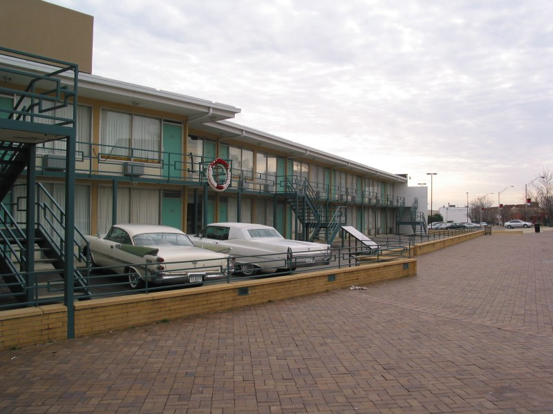
로레인 모텔 306호 발코니 · 멤피스, 테네시. 1968년 4월 4일 저녁 6시 1분, 마틴이 쓰러진 자리. 오늘날 이 모텔은 국립 시민권 박물관(National Civil Rights Museum)이 되었다. [Wikimedia Commons · CC BY-SA]
그의 죽음 직후, 발코니에서 마틴을 부축한 동료들이 길 건너 하숙집 방향을 일제히 손가락으로 가리킨 한 장의 사진은 비극의 상징으로 남았다. 그 자리에 함께 있던 젊은 목사 제시 잭슨, 앤드루 영, 랠프 애버내시 같은 이들은 훗날 미국 흑인 정치의 기둥이 된다. 스승의 피 위에서 다음 세대가 일어선 것이다. 한 사람의 죽음이 운동의 끝이 아니라, 더 넓은 정치 참여로 이어지는 시작이 되었다는 점은 마틴이 남긴 또 하나의 역설적 유산이었다.
저격범은 백인 탈옥수 제임스 얼 레이(James Earl Ray)였다. 그는 범행 두 달 뒤 런던 히스로 공항에서 위조 여권으로 체포됐다. 그는 처음에 유죄를 인정해 99년 형을 선고받았으나, 사흘 만에 진술을 번복하고 자신이 누명을 썼다며 재심을 요구했다. 그는 1998년 옥중에서 병사했다.
그의 죽음 직후, 발코니에서 마틴을 부축한 동료들이 길 건너 하숙집 방향을 일제히 손가락으로 가리킨 한 장의 사진은 비극의 상징으로 남았다. 그 자리에 함께 있던 젊은 목사 제시 잭슨, 앤드루 영, 랠프 애버내시 같은 이들은 훗날 미국 흑인 정치의 기둥이 된다. 스승의 피 위에서 다음 세대가 일어선 것이다. 한 사람의 죽음이 운동의 끝이 아니라 더 넓은 정치 참여로 이어지는 시작이 되었다는 점은, 마틴이 남긴 또 하나의 역설적 유산이었다.
레이의 단독 범행 여부를 두고는 지금도 논쟁이 있다. 마틴의 유족과 일부 연구자들은 그가 더 큰 음모(정부 기관 또는 조직범죄의 개입)의 하수인이었을 뿐이라고 주장한다. 1999년 멤피스의 한 민사재판에서 배심원단은 마틴의 죽음에 광범위한 음모가 있었다고 평결했다. 그러나 미 법무부는 1999~2000년 재조사 끝에 그 음모설을 뒷받침할 신빙성 있는 증거가 없다고 결론지었다. A설(단독범)과 B설(음모)이 여전히 맞서는 가운데, 한 위대한 인물의 죽음을 둘러싼 진실의 일부는 아직 안개 속에 있다.
마틴의 죽음에는 잊지 말아야 할 한 가지가 있다. 그가 마지막으로 선택한 싸움이 거창한 무대가 아니라, 멤피스의 쓰레기 청소부들 곁이었다는 사실이다. 노벨상을 받고 백악관을 드나들던 사람이, 생의 마지막 며칠을 가장 천대받는 노동자들의 임금 인상을 위해 쓴 것이다. 그가 발코니에서 쓰러진 그날도 그는 다음 날의 파업 지지 행진을 준비하고 있었다. 가장 낮은 자리에서 가장 낮은 이들과 함께 있던 것, 그것이 그가 평생 설교한 '섬김'의 마지막 실천이었다.
마틴의 죽음은 미국을 분노로 들끓게 했다. 그의 사망 소식이 알려지자 100개가 넘는 도시에서 흑인들의 봉기가 일어났다. 워싱턴 D.C.를 비롯한 여러 도시에서 며칠간 화재와 충돌이 이어졌고, 수십 명이 죽고 수천 명이 체포됐다. 비폭력을 평생 설파한 사도의 죽음이 폭력의 불길로 추모된 것은, 그가 그토록 막으려 했던 비극의 가장 쓰라린 아이러니였다. 4월 9일 애틀랜타 에버니저 교회에서 치러진 그의 장례에는 약 30만 명이 운집했다. 그의 관은 그가 평생 함께 걸은 가난한 흑인들을 기려, 노새 두 마리가 끄는 낡은 농부의 수레에 실려 운구되었다. 화려한 영구차 대신 가장 소박한 수레를 택한 그 운구 행렬은, 가장 낮은 자들과 함께한 그의 생애를 마지막으로 압축한 한 폭의 그림이었다.
그의 죽음 뒤, 아내 코레타 스콧 킹은 슬픔에 잠길 틈도 없이 남편의 자리를 이어받았다. 그녀는 장례를 치른 지 나흘 만에 멤피스로 가서 환경미화원 파업 지지 행진을 직접 이끌었다. 이후 40년 가까이 그녀는 '킹 센터'를 세워 남편의 유산을 지켰고, 마틴 루서 킹 데이를 국가 공휴일로 만드는 데 앞장섰으며, 반전·여성·노동·성소수자 인권으로까지 운동의 지평을 넓혔다. 한 사람이 쓰러진 자리에서 또 한 사람이 일어서고, 수많은 이름 없는 이들이 그 길을 이어 걸은 것, 그것이 한 발의 총탄으로도 끝낼 수 없었던 운동의 생명력이었다.
곁가지 1 — 자기 장례사를 미리 적은 사람
죽기 두 달 전인 1968년 2월, 마틴은 에버니저 교회 설교에서 자신의 장례를 상상하며 이렇게 말했다. "내 장례식에서 길게 말하지 마십시오. 내가 노벨 평화상을 받았다는 것도, 다른 수백 개의 상도 언급하지 마십시오. 다만 마틴 루서 킹이 다른 이들을 섬기려 애썼다고, 사랑하려 애썼다고 말해 주십시오." 이 설교는 「북 치는 사람 본능(The Drum Major Instinct)」으로 불린다. 두 달 뒤 그의 장례식에서는, 그의 육성을 담은 이 설교 녹음이 그대로 재생되었다. 죽은 자가 자기 추도사를 직접 한 셈이다. 자신의 끝을 예감한 사람의 마지막 겸손이었다.
[Source] King, 「The Drum Major Instinct」 설교 (1968.2.4) · The King Center 음성 자료
곁가지 2 — "나는 사람이다"라는 팻말
멤피스 환경미화원들이 든 "I AM A MAN(나는 사람이다)"이라는 팻말은 시민권 운동사에서 가장 상징적인 구호가 되었다. 이 짧은 문장에는 깊은 역사가 담겨 있다. 노예제 시절 노예폐지론자들의 메달에 새겨진 "나는 사람이자 형제가 아닌가(Am I Not a Man and a Brother)?"라는 18세기 구호의 메아리였기 때문이다. 두 세기를 건너, 가장 천대받는 노동자들이 가장 단순한 진실, 곧 '우리도 인간이다'를 다시 외쳐야 했다는 사실이 그 시대의 비극을 압축한다. 마틴이 마지막으로 선택한 싸움이 바로 이 팻말 곁이었다.
[Source] Michael Honey, Going Down Jericho Road (2007) · National Civil Rights Museum 전시
미국
마틴 사후 일주일 만인 1968년 4월 11일, 린든 존슨은 주택 매매·임대에서의 인종 차별을 금지한 「공정주택법(Fair Housing Act)」에 서명했다. 그의 죽음이 마지막 시민권 입법을 밀어붙인 셈이었다.
유럽
마틴이 죽은 1968년 봄, 체코슬로바키아에서는 '프라하의 봄' 개혁이 한창이었으나 그해 8월 소련 탱크에 짓밟힌다. 자유를 향한 비폭력의 시도가 동서 양쪽에서 좌절을 겪던 해였다.
일본
같은 1968년 일본은 학생운동(전공투)이 절정에 달했고, 가와바타 야스나리가 노벨 문학상을 받았다. 전 세계가 기성 질서에 맞선 젊은 세대의 격동으로 끓던 시대의 한복판에서 마틴은 스러졌다.
Tabula III · 마지막 길 (1965–1968)
셀마의 다리에서 멤피스의 발코니까지
앨라배마(셀마·몽고메리) 테네시(멤피스, 최후의 땅) 마지막 3년의 행로 피의 일요일 / 암살
한 다리 위에서 흘린 피가 투표권법을 낳았고, 한 발코니 위에서 흘린 피가 한 시대를 끝맺었다.
XI
Aliae Visiones · 다른 시선들
다른 시선, 말콤 엑스·FBI·오바마
강의 듣기
"한 시대의 한 영혼이 드리운 그늘이, 다른 영혼에게는 빛이 되기도 한다."
한 인물을 한 시선으로만 보면 그는 동상이 된다. 마틴 루서 킹을 둘러싼 여러 시선을 겹쳐 볼 때 비로소 살아 있는 인간이 보인다. 그의 비폭력에 정면으로 맞선 또 다른 흑인 지도자, 그를 파괴하려 한 국가권력, 그를 길러 낸 사상의 스승, 그리고 그의 꿈을 절반쯤 이룬 듯 보였던 21세기. 이 마지막 장에서는 마틴을 비추는 거울들을 차례로 들여다본다.
오늘날 미국에서 마틴 루서 킹은 거의 신화가 되었다. 그의 흉상이 백악관에 놓이고, 그의 이름을 딴 거리가 미국 전역에 천 개가 넘으며, 그의 연설은 모든 교과서에 실린다. 그러나 이 성인화(聖人化)에는 함정이 있다. '온화하게 꿈을 노래한 마틴'만 기억하고, '전쟁과 빈부 격차에 분노한 급진적 마틴'은 지워 버리는 선택적 기억이다. 살아생전 그는 미국인 대다수가 비호감을 느낀, 분열을 일으키는 위험인물로 여겨졌다. 1966년 한 여론조사에서 미국인의 약 3분의 2가 그를 부정적으로 보았다. 죽은 뒤에야 그는 모두의 영웅이 되었다. 우리가 한 인물을 기리는 방식이, 때로는 그를 길들이는 방식이 되기도 한다는 것을 마틴의 사후사(死後史)는 보여 준다.
곁가지 1 — 말콤 엑스, 같은 시대의 정반대 길
1960년대 흑인 운동에는 마틴의 정반대 편에 또 한 명의 거인이 서 있었다. 말콤 엑스(Malcolm X, 1925~1965)다. 본명 말콤 리틀, 훗날 엘 하지 말리크 엘 샤바즈. 그는 흑인 분리주의 종교운동 '이슬람 국가(Nation of Islam)'의 대변인으로서, 마틴의 비폭력과 통합주의를 신랄하게 비판했다. "뺨을 때리면 다른 뺨을 내미는" 사랑이 아니라 "필요한 모든 수단(by any means necessary)"으로 자기방어할 권리를 외쳤다. 두 사람은 단 한 번, 1964년 워싱턴 의사당 복도에서 잠깐 마주쳐 악수했을 뿐이다. 그러나 말콤은 1964년 메카 순례 후 인종을 초월한 형제애로 사상을 넓혔고, 마틴은 말년에 흑인 자존과 경제 정의로 급진화했다. 두 길은 끝에서 서로를 향해 휘어지고 있었다. 말콤은 1965년 2월 39세에 뉴욕에서 암살됐고, 마틴은 3년 뒤 같은 나이에 스러졌다. 같은 시대의 두 거울이 거의 같은 운명을 맞은 것이다.
[Source] Malcolm X & Alex Haley, The Autobiography of Malcolm X (1965) · Manning Marable, Malcolm X: A Life of Reinvention (2011, 퓰리처상)
곁가지 2 — FBI의 시선, "가장 위험한 인물"
FBI 국장 J. 에드거 후버에게 마틴은 평생의 표적이었다. FBI는 1963년부터 그를 도청·미행하며 사생활을 캐냈고, 1964년에는 사실상 자살을 종용하는 익명의 협박 편지까지 보냈다. 공산주의의 증거는 끝내 한 점도 나오지 않았다. 1975~76년 상원 처치 위원회의 조사로 이 모든 공작(COINTELPRO)의 전모가 드러났고, 미국 사회는 자국 정보기관이 한 시민의 인격을 조직적으로 파괴하려 했다는 사실에 충격을 받았다. 한 나라의 가장 강력한 수사기관이 그 나라의 가장 위대한 양심을 적으로 삼은 이 역설은, 권력이 두려워하는 것이 무엇인지를 가장 선명하게 보여 준다.
[Source] U.S. Senate Church Committee Report (1976) · David Garrow, The FBI and Martin Luther King, Jr. (1981)
곁가지 3 — 라인홀트 니버, 사상의 스승이라는 거울
마틴의 신학적 뼈대를 세운 사람은 신학자 라인홀트 니버였다. "개인은 도덕적일 수 있어도 집단은 그렇기 어렵다"는 니버의 통찰이, 개인의 선의가 아니라 조직된 비폭력의 압력으로 사회를 바꿔야 한다는 마틴의 전략으로 이어졌다. 흥미로운 점은, 두 사람 모두 순진한 낙관주의를 거부한 '현실주의적 이상주의자'였다는 것이다. 마틴의 "꿈"은 결코 감상이 아니라, 인간의 죄성과 권력의 비정함을 똑바로 본 뒤에도 끝내 정의를 믿기로 한 의지였다. 사상의 스승을 보면 제자의 깊이가 보인다.
[Source] Reinhold Niebuhr, Moral Man and Immoral Society (1932) · Richard Wightman Fox, Reinhold Niebuhr: A Biography
곁가지 4 — 오바마, 그리고 절반쯤 이뤄진 꿈
2008년 11월 4일, 미국 최초의 흑인 대통령 버락 오바마가 당선됐다. 마틴이 평생 외친 꿈이 가장 가시적으로 실현된 순간처럼 보였다. 오바마는 백악관 집무실에 마틴의 흉상을 두었고, 취임 선서 때 마틴이 소장했던 성경을 사용하기도 했다. 그러나 한 흑인 대통령의 탄생이 곧 인종 문제의 해결을 뜻하지는 않았다. 오바마 임기 중에도, 그 이후에도 경찰 폭력과 인종 갈등은 거듭 폭발했다. 2013년 시작된 '흑인의 생명도 소중하다(Black Lives Matter)' 운동, 2020년 조지 플로이드의 죽음은, 마틴의 꿈이 여전히 진행형임을 가장 정직하게 증언한다. 꿈은 한 사람의 당선으로 완성되지 않는다.
[Source] Barack Obama, A Promised Land (2020) · Ta-Nehisi Coates, Between the World and Me (2015)
곁가지 5 — 오늘의 교훈, 한 꿈이 한 시대를 건너서
마틴이 죽고 15년 뒤인 1983년, 로널드 레이건 대통령이 매년 1월 셋째 월요일을 '마틴 루서 킹 데이' 국가 공휴일로 지정하는 법에 서명했다. 그러나 그 법이 통과되기까지 의회의 격렬한 반대가 있었다. 노스캐롤라이나의 상원의원 제시 헬름스는 마틴이 공산주의자였다며 끝까지 반대했다. 결국 법은 통과됐고, 오늘날 미국의 수많은 학교가 그날 「나에게는 꿈이 있습니다」 연설을 다시 틀어 준다.
마틴의 삶이 오늘 우리에게 주는 교훈은 두 가지다. 첫째, 정의는 저절로 오지 않는다는 것. 그가 「버밍엄 옥중 편지」에서 못 박았듯, "기다리라"는 말은 거의 언제나 "결코 안 된다"는 뜻이었다. 권리는 호소가 아니라 조직된 행동으로만 앞당겨진다. 둘째, 가장 강력한 무기가 반드시 가장 폭력적인 무기는 아니라는 것. 그는 사랑과 비폭력이라는, 얼핏 가장 약해 보이는 도구로 세계 최강국의 법을 바꿨다. 약함을 가장한 강함, 그것이 마틴이 인류에게 남긴 가장 큰 유산이다. 그의 꿈은 아직 끝나지 않았고, 그래서 그는 동상이 아니라 여전히 우리에게 던져진 물음으로 남아 있다.
[Source] The King Center Atlanta 공식 자료 · National Park Service, MLK Jr. National Historical Park
곁가지 6 — 한국에서 만난 마틴의 그림자
마틴의 비폭력 사상은 한국과도 무관하지 않다. 1970~80년대 한국의 민주화·인권 운동가들은 간디와 함께 마틴 루서 킹의 비폭력 저항을 중요한 사상적 자원으로 받아들였다. 함석헌은 간디와 비폭력을 깊이 소개했고, 「나에게는 꿈이 있습니다」 연설은 한국의 인권 교육에서 거듭 인용되었다. 한 미국 흑인 목사가 인도 노인에게서 받아 든 비폭력의 도구가, 다시 태평양을 건너 또 다른 억압받는 이들의 손에 닿은 셈이다. 비폭력은 한 나라의 것이 아니라, 시대와 국경을 건너 이어지는 인류 공동의 자산이다.
[Source] 함석헌 저작집 · 한국 민주화운동 자료관 관련 기록
곁가지 7 — 워싱턴의 화강암 한 덩어리
2011년, 워싱턴 D.C.의 내셔널 몰에 마틴 루서 킹 주니어 기념비가 세워졌다. 9미터 높이의 거대한 화강암에서 마틴이 팔짱을 낀 채 걸어 나오는 형상이다. 이 조각의 모티프는 그의 「나에게는 꿈이 있습니다」 연설 한 구절, "절망의 산에서 우리는 희망의 돌을 깎아 낼 수 있습니다"에서 따왔다. 그런데 이 기념비는 미국 역사상 처음으로, 대통령도 백인도 아닌 한 흑인 시민에게 내셔널 몰의 한복판을 내준 사례였다. 조각가는 중국 작가였고 돌도 중국산이라는 점이 논란이 되기도 했다. 한 인물을 기리는 일조차 국경과 인종을 넘나드는 21세기의 풍경이다. 절망의 산에서 깎여 나온 그 희망의 돌은, 오늘도 포토맥 강가에서 그가 가리키던 약속의 땅을 바라보고 서 있다. 그 돌 앞에 선 사람들은, 박제된 동상이 된 영웅이 아니라 여전히 끝나지 않은 한 꿈을 마주하게 되는 것이다.
[Source] National Park Service, "Martin Luther King Jr. Memorial" 공식 자료
미국
마틴의 유산은 미국 정치의 양 진영 모두가 인용하는 드문 공유 자산이 되었다. 그러나 보수가 즐겨 쓰는 '피부색이 아닌 인격'의 마틴과, 진보가 강조하는 '경제 정의와 반전'의 마틴은 같은 사람의 다른 얼굴이다.
남아프리카
마틴과 같은 시대를 감옥에서 보낸 넬슨 만델라는 27년 복역 끝에 1990년 석방되어 1994년 남아공 첫 흑인 대통령이 됐다. 두 대륙의 비폭력·화해의 길이 한쪽은 암살로, 한쪽은 대통령직으로 갈렸다.
세계
마틴의 비폭력 모델은 이후 폴란드 연대노조, 필리핀 피플 파워, 동유럽 민주화 등 전 세계 비폭력 혁명의 교과서가 되었다. 한 미국 목사의 방법이 간디에게서 받아 다시 세계로 흘러 나간 것이다.
도판 모음 — Iconographia
설교단에서 워싱턴 광장까지, 셀마의 다리에서 멤피스의 발코니까지. 한 목사가 한 시대를 흔든 흔적들.
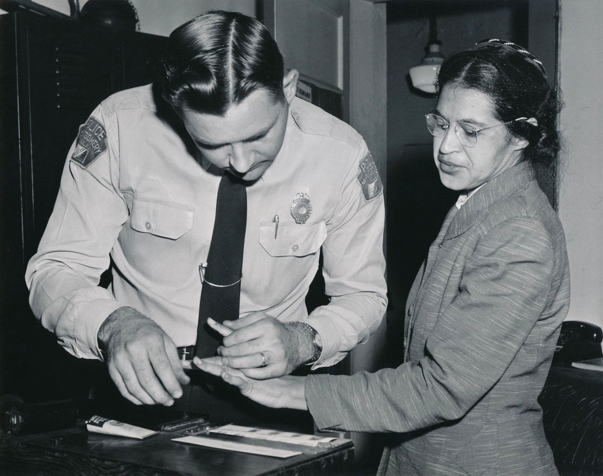
몽고메리 버스 보이콧 기록 · 1955~56 [Wikimedia · Public Domain]로레인 모텔 · 멤피스 · 1968년 4월 4일 암살 장소, 현 국립 시민권 박물관 [Wikimedia · CC]